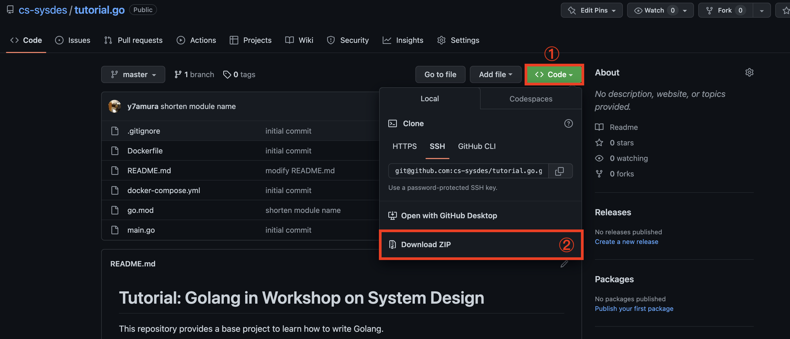
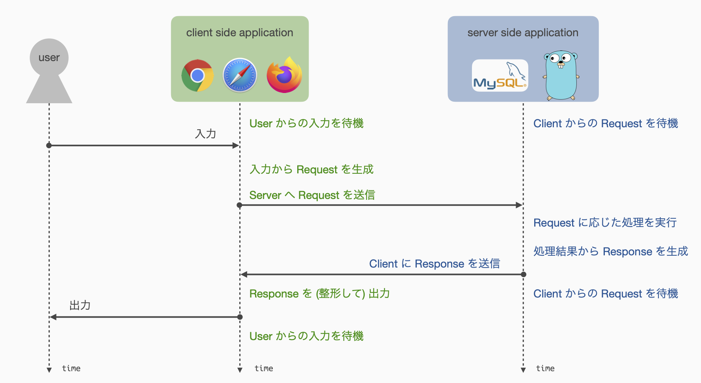
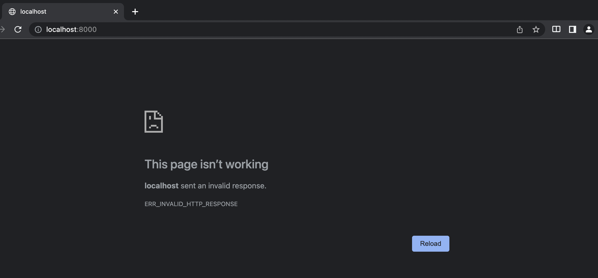
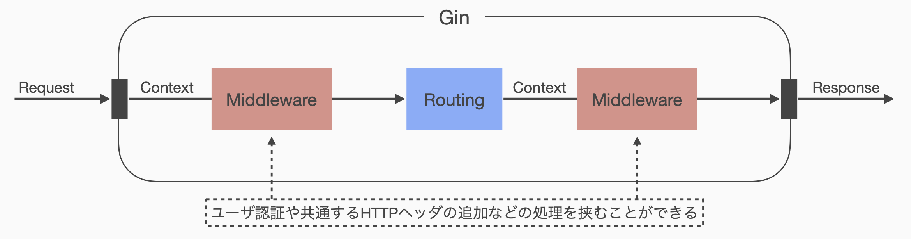
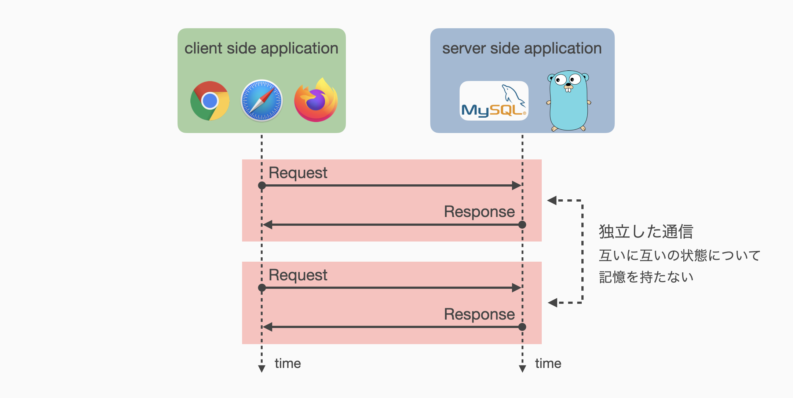
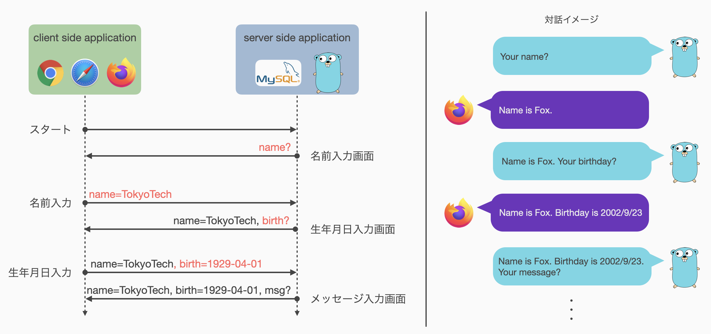

システム設計演習 - Webプログラミング -
この資料は，情報工学系 システム設計演習 Webプログラミング の演習資料です．
資料は全 10 回からなり，練習問題に取り組む時間やレポートをまとめる時間を含めて本演習全体を構成するものとします． 前半 5 回は基礎編としてWebアプリケーションの動作原理やWebアプリケーションフレームワークの使い方などを主に扱います． 後半 5 回は実践編としてWebアプリケーションフレームワークを使用した簡単なタスク管理アプリケーションの開発を扱います． 演習内容にしたがって期末レポート課題を出題しますので，各自のペースで計画的に進めてください．
練習問題が設定されている場合がありますが，必ずしも期末レポート課題に関連する内容ではなく，単に理解度を推し量るものを含みます．
開発環境など
この演習では Go言語 によるプログラム開発，Docker を用いた仮想環境上でのプログラム実行を想定しています． また，動作確認に Webブラウザ を使用します． 情報工学系演習室の端末には関連ソフトウェアがすでにインストールされていますので，すぐに開発を始めることができます．
個人所有PCなどで演習を行う場合，各自の端末に開発環境をセットアップしてもらう必要があります． OSやエディタなどについて特に指定はありませんので，各自の慣れ親しんだ環境で開発を進めてもらって構いません． Windows PC での開発を考えている方には， WSL2 の使用を推奨します．
プログラムの実行に必要な Docker は，以下を参考に各自でインストールをお願いします．
この演習では基本的に Command Line Interface (CLI) での実行を想定しているため，ターミナルエミュレータ上で docker-compose コマンドが有効であることを確認してください．
| OS | 参考サイト |
|---|---|
| OS X | Homebrew or Docker Desktop for Mac |
| Windows (+WSL) | Docker Desktop w/ WSL2 |
| Ubuntu | DD4L on Ubuntu 22.04 |
表中に掲載のない環境を愛用している方は自力解決のできる方々だと思いますので，各自で環境整備をお願いします．
基本的に Docker 上でのプログラム実行を想定しているため，Go言語のビルドツールはなくても大丈夫です．
ただし，使用するテキストエディタなどによっては go コマンドが実行できることを要求してくる場合があるため，必要に応じてインストールしておくとよいかもしれません．
インストール方法は Download and install - The Go programming language を参照してください．
Go言語の基本的な書き方や Docker によるプログラムの実行方法については，01: 演習のための準備 にて扱います．
質問対応
この注意事項は授業Webサイトに記載したものと同じです．
演習に関する質問は Slack にて随時受け付けますが，特に講義時間外については即レスを期待しないでください． 質問者本人だけでなく他の人を助けることにも繋がることも多いため，可能な限り #help チャネルを活用してオープンな場で質問をしてもらえると良いかと思います． ただし，DM 等での質問や議論を妨げるものではありません． DM 等で直接受けた質問であっても，重要な質問であると判断した場合には，匿名で #help チャネルに質問の内容と回答を掲載する場合があります．
質問時には，
- 資料のどの部分に取り組んでいるのか．
- なにが目的とする動作 (理想的な挙動 or 出てほしい結果) なのか．
- それを実現するためになにをしたのか．
- 実際にはどうなっている のか． (出力やエラーの内容など)
を明らかにしてくれると非常に助かります． 一方で，質問の意図が掴みづらい場合にはこちらから掘り下げますので，気にしすぎず気楽に質問してください．
おことわり
資料中に存在する誤り・不明瞭な説明は，すべて担当教員に責任があります． 誤りを発見された場合は，適切に修正・訂正を行いますので，ご一報ください． また，不明瞭な点や改善すべき点などについても遠慮なくご報告いただければと思います． 特にWebアプリケーション開発の経験がある学生がいれば，未経験の人がつまずきそうな箇所などを指摘してもらえると助かります． よりわかりやすい演習資料となるよう努力していきますので，ご協力のほどよろしくお願いいたします．
01: 演習のための準備
第1回は，演習を進めるにあたって必要な以下の事項について説明します．
- Go言語プロジェクト
- Dockerコンテナ上でのプログラムの実行
- 入門Go言語
Dockerなどの開発環境のインストールおよび設定は済んでいるものと仮定しています． まだの方は HOME - 開発環境など を参考に開発環境を整えてから進んでください．
Go言語プロジェクト
この演習では，扱う内容に応じて最低限のプログラムと実行環境の設定からなるプロジェクトテンプレートを配布し，資料の内容にしたがって配布したプロジェクト内のファイルを編集する形式で演習を進めます． 編集後のプロジェクトの提出などは求めません．
配布するプロジェクトテンプレートには，初期状態としてとりあえず動く程度のプログラムしか入っていません． 必要に応じて関数を定義したり，ファイルを分割したり，ディレクトリを新たに作ってファイルを移動したり，etc. といった作業が要求されます． 資料中にて新たなファイルの作成を指示する場合もありますが，基本的には各自の判断でファイル分割やディレクトリ (Go言語では特に「パッケージ」と呼びます) の切り分けなど，自由に編集して構いません．
プロジェクトの取得
今回使用するプロジェクトを以下のURLよりダウンロードしてください．
https://github.com/cs-sysdes/tutorial.go
GitHub の扱いに慣れている方は直接 clone してもらって構いません． そうでない方は，リンクからページを開き，下の画像の通り「Code」→「Download ZIP」と押すと，zip形式でプロジェクトをダウンロード可能です． ダウンロードしたzipファイルを展開したら準備完了です．

今回使用する tutorial.go は，以下のファイル群で構成されています．
- README.md
- Dockerfile
- docker-compose.yml
- go.mod
- main.go
Dockerfile および docker-compose.yml は，プログラム実行時に使用する仮想環境についての設定ファイルです． 演習内で編集することはないと思います．
go.mod は Go言語 の開発ツールである go コマンドによって参照されるプロジェクトの設定などに関するファイルです．
プロジェクト使用するコンパイラのバージョンを指定したり，依存する外部ライブラリの管理などを行うために必要なファイルです．
外部ライブラリの追加は go コマンドで実行することができるため，このファイルも直接編集する機会は少ないです．
main.go が今回の実行対象である Go言語 で書かれたプログラムです． 内容を以下に示しますが，おそらく Go言語 に触れたことがない人でも，実行すると何が起こるのか想像がつくのではないでしょうか．
package main
import "fmt"
func main() {
fmt.Println("Hello world!")
}
型の宣言方法や識別子の可視性など Go言語 特有のルールや機能も存在しますが，Go言語 はかなり C言語 に近い印象を個人的に持っています． みんなが大好きな「ポインタ」もちゃんとあります．
Dockerコンテナ上でのプログラムの実行
ここでは仮想環境上でプログラムを実行する方法を説明します． Dockerの管理する仮想環境は一般に「コンテナ」と呼ばれるため，以降では単に「コンテナ」あるいは「Dockerコンテナ」と表記します．
この演習では基本的にコマンドライン上での実行を想定しています．
たとえば資料中に$ echo "Hello world!"と書かれている場合，これはコマンドライン上で echo コマンドを "Hello world!" という文字列を引数として実行することを意味します．
先頭の "$" を入力する必要はありません．
コンテナの起動
いま ~/sysdes/tutorial.go にダウンロードしたプロジェクトが展開されていると仮定しましょう．
このパスは各自の環境で置き換えてください．
ターミナルエミュレータを起動し，以下のコマンドを打ち込むことでコンテナを起動することができます． "#" 以降はコメントなので入力する必要はありません．
$ cd ~/sysdes/tutorial.go # プロジェクトディレクトリへ移動
$ docker-compose up -d # 仮想環境の起動
初回起動には少し時間がかかりますので，気長に待ちましょう．
「docker-compose コマンドが見つからない」といったエラーが出ている場合，Docker のインストールが正常に完了していない可能性があります．
Docker のインストールが完了していることや，コマンドへパスが通っていることなどを確認してください．
Mac や Linux では自動的にパスの通っている場所へ実行ファイルを配置してくれることが多いですが，特に WSL を使用せずに Windows のコマンドプロンプトで実行する場合にはパスの設定などが別途必要になることがあります．
docker-compose は通常複数のコンテナを管理するために使用します．
ここでは Go言語 実行環境として 1 つのコンテナしか扱っていませんが，演習後半 (実践編) では実際に複数のコンテナを同時に立ち上げます．
プログラムの実行
コンテナが起動しだら実際にプログラムを動かしてみましょう．
Go言語 は C言語 や Java などと同じコンパイラ型ですが，ビルドツールである go コマンドを使うことでプログラムを直接実行することができます．
ただし，ここでは Dockerコンテナ 上で実行するため，少し長いコマンドを打つ必要があります．
go.mod が存在するディレクトリ (~/sysdes/tutorial.go) 内にて以下のコマンドを実行してください．
$ docker-compose exec app go run main.go
Hello world!
このコマンドは主に 2 つの部分からなります．
前半部分：docker-compose exec app は，"app" と名付けられたコンテナ上でプログラムを実行するためのコマンドです．
詳細は省略しますが，プロジェクトディレクトリ内の docker-compose.yml を覗くと名前を設定している記述があり，名前を変更することも可能です．
後半部分：go run main.go は，Go言語ビルドツールによって main.go ファイルを実行するためのコマンドです．
これらを組合わせることで，ローカル端末から "app" コンテナ上で main.go を実行し，その結果をローカル端末上で確認することができるようにしています．
go run main.go などとして直接実行する方が早いです．
演習後半 (実践編) において docker-compose コマンドで複数のコンテナを起動順序の制約を守りながら並行して立ち上げる必要があるので，今のうちから慣れてもらうためにあえて面倒な方法を紹介しています．
仮想環境の停止
演習が終了したら，忘れずにコンテナを停止しましょう．
起動コマンドが up だったので，停止は down です．
プロジェクトディレクトリ (~/sysdes/tutorial.go) 内で以下のコマンドを実行してください．
$ docker-compose down
停止時にも少し時間がかかる場合があります． 想環境の停止においてエラーが発生することはほとんどありませんが，たとえばプロジェクトのパスを変更 (ディレクトリの移動や名前の変更) してしまうと正常に停止できない場合があります．
以上の手順は演習を進める上で毎回使います．
忘れたらここを見直せば良いので頑張って覚える必要はないですが，たとえば $ make start で起動できるよう Makefile を設置するなど，各自で工夫をしてもよいと思います．
入門Go言語
演習で使用するGo言語について簡単に勉強しましょう．
tutorial.go では画面に "Hello world!" と出力するプログラムを扱いました． ここからは，これをベースとして色々な言語機能を説明し，プログラムを実際に変更して動かしてみることで，Go言語に入門 していきたいと思います．
すでにGo言語に慣れている人は，これ以降をスキップして 第2回 に進んでもらって構いません． お疲れさまでした．
main.go 解説
初期状態の tutorial.go/main.go は以下のようになっています．
package main
import "fmt"
func main() {
fmt.Println("Hello world!")
}
1行目 package main はパッケージ宣言と呼び，このファイルが属するパッケージを明示しています．
Go言語 ではすべてのファイルが「パッケージ」に属しており，パッケージの集合を「モジュール」と呼んでいます．
すなわち，いままでプロジェクトと呼んでいたものは，tutorial.go という名のモジュールであるということになります．
main は特別なパッケージ名で，実行基点となる main 関数が存在するファイルは必ず main パッケージに属している必要があります． また，一つのパッケージに複数の main を配置することは可能ですが非推奨となっており，今回の場合ルートディレクトリに別の main 関数を持ったファイルを配置して main パッケージであると宣言すると，ビルドツールが文句を言います． 最近流行の Rust ほどではありませんが，Go言語 もビルドツールがなかなかお節介です．
3行目 import "fmt" は，このプログラムで使用するパッケージをインポートするための宣言です．
C言語 でいうところの #include <...> 文みたいなものだと考えてください．
なお，プログラム中で使用していないパッケージを import していると，コンパイラがエラーを出します．
警告ではなくエラーです．
5行目 func main() は，C言語 における void main(void) と同等と考えて差し支えありません．
Go言語 は C言語 と同様に main という識別子をもった関数を実行基点としています．
C言語 では普通 int main(void) と書きますが，Go言語 の main関数 は戻り値を持たないため，戻り値型の宣言がありません．
6行目 fmt.Println(...) は標準出力へ文字列を出力する関数を呼び出しています．
先ほど fmt パッケージを import したのは，ここで fmt パッケージ内の Println 関数を使用するためです．
パッケージ内の関数や変数といった識別子を呼び出す場合には，このように「パッケージ名 + 識別子名」の形式で記述します．
Println 関数は，Java の System.out.println メソッドと同じものだと思ってください．
引数で与えた文字列を，改行付きで標準出力へ出力します．
以上が初期状態での main.go の内容になります． ここからは，このファイルを編集しながら代表的な言語機能を見ていきましょう．
変数と定数
いま文字列 "Hello world!" を直接 fmt.Println 関数に入力していますが，これを一旦変数に格納した上で関数に渡すよう変更してみましょう．
まず C言語 と最も異なるルールとして，Go言語 では型を後置します．
すなわち，Go言語 における変数宣言の基本的な形式は var 変数名 型名 になります．
先頭の var はこれが変数宣言であることを意味し，そのあとに変数名，変数の型が続きます．
同じ型の変数を複数宣言する場合には，var i, j, k int などのようにまとめることができます．
さらに，異なる型の変数を複数宣言する場合には，以下のように var キーワードをグループ化することもできます．
var (
i, j, k int
v string
)
これらの機能は後ほど登場する const キーワードでも同様です．
局所変数
具体的に main.go を変数を使って書き換えた例を示します．
package main
import "fmt"
func main() {
var message string = "Hello world!" // string型の変数messageを宣言し"Hello world!"を代入
fmt.Println(message)
}
ただ変数を宣言し，値を代入しているだけですので，あまり迷うことはないかと思います．
ちなみに Go言語 では C言語 と同様に // や /* */ によってコメントを記述可能です．
さて，Go言語 ではこれをもう少し効率的に書くことができます． 1 つ目の改善点として，変数の宣言と初期化 (代入) を同時に行う場合，型は初期値から推論できるので書く必要がありません． つまり以下のような書き方が可能です．
// messageの型は書かなくても初期値からstringに推論される
var message = "Hello world!"
2 つ目の改善点として，関数内や制御ブロック内などといった局所スコープに限り，以下のように書いても同じ意味になります．
// 下記は var message = "Hello world" と同等
message := "Hello world!" // = ではなく := であることに注意!!
ここまでの理解から以下のコードが合法になることがわかります．
package main
import "fmt"
func main() {
message := "Hello world!"
fmt.Println(message)
}
注意点として，:= では同じスコープ内で複数の同じ変数を束縛できません．
すなわち，以下のコードはコンパイルエラーになります．
func main() {
message := "Hello world!"
message := "Hello, Masu!" // これはmessageの再定義なのでダメ
message = "Hello, Kazuya!" // これはmessageへの再代入 (既存の変数の変更) なのでOK
}
ただし，このルールには一部例外があります． 詳細は後日，おそらく演習内で例外的な状況が出てくると思いますので，そのときに説明を加えます．
グローバル変数・定数
Go言語 では，C言語 と同様にグローバル変数を定義することができます．
ただし，:= を用いた略記法はグローバル変数では使用できないことに注意してください．
また，グローバル変数は定数としての利用を想定していることが多いかと思います．
そうした場合は，var を const に変えることで変数ではなく定数を宣言することができます．
グローバル定数を使って書いた例を以下に示します．
package main
import "fmt"
const message = "Hello world!" // 型推論は効く
func main() {
fmt.Println(message)
}
定数は関数スコープ内などでも定義できますが，用途が限定されるためかあまり見かけたことがありません．
個人的には const 指定好きなので使いますが……
関数
変数 (定数) が使えるようになったら，次は関数です．
いま main 関数の中は非常に単純ですが，コードが複雑化すると関数を分けたくなります．
Go言語 での関数の定義方法は func 関数名(引数リスト) 戻り値型 { 処理の内容 } となっています．
型は後置するルールなので，戻り値型も後ろになっています．
ここでは引数として名前を受け取り，挨拶を返す関数 hello を作成してみます．
package main
import "fmt"
func main() {
greet := hello("Masu")
fmt.Println(greet)
}
func hello(name string) string {
return fmt.Sprintf("Hello, %s!", name)
}
当然ながら引数リストでも型は後置するルールなので，name string で name という string 型の仮引数を設定しています．
C言語と同様に戻り値を返すには return キーワードを使用します．
fmt.Sprintf は C言語 の sprintf 関数 (<stdio.h>) と同じものです．
これを実行すると以下のような結果を得られるはずです．
$ docker-compose exec app go run main.go
Hello, Masu!
Go言語 の戻り値には C言語 にはない機能があります．
たとえば，C言語の printf 関数が整数値を返すのと同様に．先ほどから使用している fmt.Println 関数も戻り値を持ちます．
普段はほとんど使いませんが，fmt.Println 関数の戻り値は (int, error) であると定義されています．
Go言語 ではこのように複数の戻り値を返すことができ，至る所でこの機能を使用しています．
万が一 fmt.Println 関数の戻り値を受け取りたい場合には，以下のように書く必要があります．
i, err := fmt.Println("Hello, Kazuya!")
ただし，常に両方の戻り値が必要というわけでもないと思うので，戻り値を破棄する特別な変数名として _ (アンダースコア) が予約されています．
つまり，先ほどの例で第2戻り値のエラー情報だけ欲しい場合には，以下のように書けます．
_, err := fmt.Println("Hello, Kazuya!")
識別子の命名規則と可視性
さきほど関数宣言で hello という識別子を使いました．
また，グローバル変数を定義する際も message という識別子を使いました．
何も変なところはないように思いますが，実は意識して小文字から始まる識別子を使いました．
一方で fmt.Println 関数は，fmt はパッケージ名なので無視するとして，関数名は大文字から始まる識別子になっています．
実は Go言語 では，変数や関数の識別子名として，先頭が大文字である場合と小文字である場合を区別します． そして，これらを区別することで，パッケージ外からの識別子の可視性をコントロールしています．
具体的には，fmt パッケージ内にも先頭が小文字の識別子が存在しますが，これらの識別子を main パッケージから参照することはできません．
小文字はじまりの識別子はパッケージローカル，すなわち Java でいえば「アクセス修飾子なし」の状態であるということになります．
一方，大文字はじまりの識別子は Java でいうところの public になるため，main パッケージから fmt.Println 関数を参照することができるということです．
このルールは現在のところあまり意識する必要はありません． ですが，今後プロジェクトが大きくなってパッケージを分割していく必要が生じた際に落とし穴になる可能性があるため，ここで説明をしました． 今後も必要に応じて触れる予定でいます．
制御構造
複雑な処理を実行するために必要な機能である条件分岐と繰り返しについて説明します．
条件分岐
条件分岐には，主に if および switch を使用します．
条件分岐 1: if
if はC言語とほとんど同じですが，Go言語 では条件節に丸括弧が不要です．
// iは整数型の変数
if i % 2 == 0 {
fmt.Println("Even!")
} else {
fmt.Println("Odd!")
}
条件分岐 2: switch
次に switch ですが，通常の使い方はこちらもだいたい同じです．
// iは整数型の変数
switch i {
case 42:
fmt.Println("Answer to the Ultimate Question of Life, the Universe, and Everything")
case 57:
fmt.Println("Prime!")
default:
fmt.Println("Common number")
}
if と同じように，switch(i) { ではなく switch i { と書けます．
ただし，C言語 との違いとしてデフォルトで fall through しないようになっています．
したがって，至る所に break と書く必要がありません．
一方で break の代わりに fallthrough と書くことで，わざと fall through させることもできます．
Go言語 の switch における便利な機能として，複数のマッチ対象を一度に書く機能があります．
また，対象は整数値に限定されず，他の型でも渡すことができます．
以下に具体例を示します．
// prefecture はstring型の変数
switch prefecture {
case "Hokkaido":
return "countryside"
case "Tokyo", "Yokohama": // "Tokyo" か "Yokohama" の場合にマッチ
return "metropolis"
default:
return "unknown"
}
さらに，Go言語 の switch は複数条件を持つ if として使用することもできます．
func Collatz(n int) bool {
switch { // 対象がないがtypoではない
case n < 1:
return false
case n == 1:
return true
case n % 2 == 0:
return Collatz(n / 2)
default:
return Collatz(3 * n + 1)
}
}
複数の case 条件を満たす場合には，より上に書かれたものが優先されます．
すべての case が実行されるわけではないので注意してください．
繰り返し
繰り返しを表現するには for を使用します．
while はありません．
例として 1 から 100 までの整数を出力するプログラムを示します．
for i := 1; i <= 100; i++ {
fmt.Println(i)
}
for も C言語 のものとほとんど同じですが，if と同様に丸括弧を書きません．
ここで，繰り返し変数の定義として i := 1 を与えていますが，これは for スコープ内の局所変数なので := による型推論を含めた初期化 + 定義が可能となっています．
より便利な例を見てみます． Go言語 にも当然データ構造としての配列があるわけですが，配列のインデックスと要素を順に出力したい状況はよく発生します． そうした場合，以下のように Java の拡張for文のような書き方ができます．
animals := []string{"dog", "cat", "Tasmanian devil"}
for i, a := range animals {
fmt.Printf("%d: %s\n", i, a)
}
インデックス値が不要の場合には _ で受けて破棄することで対応できます．
Go言語に while はありませんが，for によって while と同等のことが表現できます．
for i < 10 { ... } // while(i < 10) に相当
for true { ... } // while(true) に相当 (無限ループ)
特に 2 つめの無限ループに関しては特別な記法があり，条件節を省略して
for { ... } // for true { ... } と同等
と書くだけで十分です．
練習問題
ここまでの理解度を測るため，FizzBuzz問題を解いてみましょう．
手順として以下の要件を満たす関数を順に作成し，最後に組合せることで1〜30までの数値についてFizzBuzzを表示するプログラムを作成してください．
- 3の倍数 を判定する関数
- 入力：整数値 (
int) - 出力：入力が 3の倍数 であれば
true，それ以外はfalse
- 入力：整数値 (
- 5の倍数 を判定する関数
- 入力：整数値 (
int) - 出力：入力が 5の倍数 であれば
true，それ以外はfalse
- 入力：整数値 (
- 15の倍数 を判定する関数
- 入力：整数値 (
int) - 出力：入力が 15の倍数 であれば
true，それ以外はfalse
- 入力：整数値 (
- 出力すべき文字列を返す関数
- 入力：整数値 (
int) - 出力：入力が 3の倍数 であるが 5の倍数 でなければ
"Fizz"を，3の倍数 でないが 5の倍数 であれば"Buzz"を，15の倍数 であれば"FizzBuzz"を，それ以外は入力値を文字列化して返す
- 入力：整数値 (
fmt.Sprintf 関数か，strconv パッケージ名の strconv.Iota を使用するとよい．
ポインタ
Go言語 にもポインタが存在し，役割や使い方などは C言語 のポインタとほぼ同じです． ただし，Go言語 は GC (Garbage Collection) 機能を持つ言語なので，C言語 のポインタに比べれば制約も緩く，やや扱いやすいものになっています．
Go言語 のポインタ変数は，C言語 と同様に型名にアスタリスクを付けることで宣言が可能です．
ただし，型宣言の方法が異なったように，ポインタ変数の型宣言もまた C言語 とは異なり，たとえば整数型ポインタであれば *int のように型名の前にアスタリスクがつきます．
また C言語 と同様に，通常の変数に & (アンパサンド) を付けることで，その変数へのポインタを取得できます． 逆にポインタから値を参照したいときも，C言語 と同様にアスタリスクによるデリファレンスが可能です．
これまでの関係を整理すると，以下のようになります．
var i int = 0
var p *int = &i // 変数iのポインタを取得
var j int = *p // ポインタ変数pを経由して変数iの値を取得
とりあえずポインタ変数を確保して，後から値を代入したい場合には組み込み関数 new を使うと良いです．
var p *int
p = new(*int)
*p = 1
new を使うため誤解が生じるかもしれませんが，free はありません．
ポインタ変数 p は，不要になれば GC によって勝手に解放されます．
C言語 では無効なポインタ値として NULL が定義されていましたが，Go言語 では nil になります．
Go言語 では，未初期化のポインタ変数は nil を指すことが言語仕様上決まっています．
また，GC がある言語であるため，以下のコードが Go言語 では合法になります．
func NewInt() *int {
p := 1
return &p
}
var p *int
p = NewInt()
このコードは関数スタックに積まれた局所変数のポインタを返しているので，C言語では合法ではありません． 一方 Go言語 では，これは特にエラーもなく動きます． 実際，Go言語 のコードでは局所変数のポインタどころか即値のポインタすら関数外へ return するようなコードがよく見られます． 代表的な例としては，次のセクションで説明する構造体を関数ローカルで定義し，そのまま return するコードです．
type Person struct {
Name string
Age int
}
func NewPerson(name string, age int) *Person {
return &Person{ name, age }
}
C言語 としてみるとなんだか不思議なコードですが，Go言語 では割と普通に見かけます．
練習問題
次のコードがどういう出力になるか考え，実装して確かめてみよ．
package main
import "fmt"
func IncrementV(v int) {
v = v + 1
}
func IncrementP(p *int) {
*p = *p + 1
}
func main() {
v := 0
IncrementV(v)
fmt.Printf("v = %d\n", v)
p := &v
IncrementP(p)
fmt.Printf("v = %d\n", v)
}
配列とスライス
同じ型の複数の値をまとめて扱うためのデータ構造として配列とスライスが存在します． Go言語 において通常「配列」と呼ぶものは「固定長配列」を意味しており，これは決められた長さを持つデータ構造です． 一方で，「スライス」は一般に「可変長配列」と呼ばれるものであり，こちらはその名の通り長さを変えることができます．
配列
配列 (固定長配列) 定義の基本形は var 変数名 [長さ]型 になります．
また，初期値を直接与える場合には，変数名 := [...]型 { 初期値のリスト } というように長さを推論させることができます．
したがって，配列の型としての記法は [長さ]型 であり，この点からも長さを指定する必要があることがわかります．
var 変数名 [長さ]型 の形式で定義された配列は，指定された長さの分だけ型ごとに決められたデフォルト値ですべての要素が初期化されます．
すなわち，以下の例において a1 と a2 はすべての要素が等しい 2 つの異なる配列ということになります．
var a1 [5]int
a2 := [...]int{0, 0, 0, 0, 0}
配列中の特定の要素は，C言語と同様に 変数名[インデックス値] でアクセス可能です．
他の多くの言語と同様に，0-based indexing になっています．
a := [...]int{1, 2, 3, 4, 5}
fmt.Println(a[0]) //=> 1
Go言語はすべての変数が値として扱われるため，配列もいわゆる値型と呼ばれるような挙動をします．
すなわち，以下のコードにおいて a2 は a1 のコピーになり，両変数は別の領域にあるデータを指します．
a1 := [...]int {1, 2, 3, 4} // 新しい長さ4の配列
a2 := a1 // a1と同じ内容の新しい長さ4の配列
スライス
スライス (可変長配列) 定義の基本形は var 変数名 []型 となり，配列定義から長さの指定が消えた形となっています．
初期値を直接与える場合も長さの指定がないため，変数名 := []型 { 初期値のリスト } という表現になります．
スライスの型としての記法は []型 です．
var 変数名 []型 の形式で定義されたスライスは，サイズが 0 になります．
つまり，なにも入っていない状態です．
スライスも配列と同様に 変数名[インデックス] の形式で各要素にアクセスできますが，サイズ 0 のスライスにアクセスした場合，どのようなインデックス値に対しても範囲外アクセスによりプログラムが異常終了します．
var 変数名 []型 の形式で定義したスライスは，組み込み関数 make によって指定したサイズのスライスとして確保しなおすことができます．
組み込み関数 make は引数として型，サイズ，キャパシティの 3 つをとりますが，キャパシティは省略可能です．
キャパシティを省略した場合，おそらくサイズに依存して適切なキャパシティが自動設定されます．
var array []int // これはサイズ0の整数型スライス
array = make([]int, 5) // ここでサイズ5の整数型スライスになる (キャパシティは自動設定)
スライスも値ではあるのですが，いわゆる参照型のような挙動をします．
スライスはメモリ上での先頭アドレス・サイズ・キャパシティを持っているようなデータ構造なので，スライスのコピーはこれらの値のコピーを意味します．
つまり，以下のコードにおいて a2 は a1 の持つ先頭アドレス・サイズ・キャパシティの値をコピーしたものであるため，指している先頭アドレスは同じとなり，実質的に同じものを指す変数となります．
a1 := []int {1, 2, 3, 4} // a1が持つのは，先頭要素のアドレス，サイズ，キャパシティ
a2 := a1 // a2が持つのは，a1の先頭要素のアドレス，サイズ，キャパシティ
スライスは可変長であるため，組み込み関数 append を使って要素を追加し，スライスの長さを変えることができます．
append 関数は追加する要素を複数とることができ，追加後のスライスを返します．
a1 := []int{1, 2, 3, 4}
a1 = append(a1, 5, 6, 7) //=> a1 == [1, 2, 3, 4, 5, 6, 7]
ここで注意すべきこととして，追加前の a1 が指していた先頭要素のアドレスと追加後の a1 が指す先頭要素のアドレスが一致する保証はありません．
要素を追加した結果として a1 のキャパシティを超えてしまう場合，新たなキャパシティで a1 を再確保することでスライスの伸長を行うためです．
すなわち，append 関数はメモリアロケーションを発生させる可能性があり，場合によってはパフォーマンスに影響が出ることもあります．
追加には append 関数がある一方で，削除する関数はありません．
Go言語 では Python のように部分スライスを取得できるので削除関数を自作することはできます．
構造体
複数の型をまとめた複合型を作りたい場合，Go言語 では構造体を使用します． C言語 の構造体と同じものです．
構造体を定義するには struct キーワードを使用します．
たとえば，文字列型の名前と整数型の年齢をフィールドに持つ構造体の定義は以下のようになります．
struct {
Name string
Age int
}
C言語 では構造体を定義する際に構造体名を与えないといけませんでしたが，Go言語 では不要です． これはそのまま型として機能するので，次のような変数宣言が可能です．
var person struct {
Name string
Age int
}
構造体変数は以下のように，波括弧を用いてそれぞれのフィールドに代入する値を指定することで初期化できます．
var person struct {
Name string
Age int
}{
"Tech-chan",
5, // 最後のフィールド値のあとに改行を入れる場合，ここのカンマは必要
}
また，フィールド名を指定して初期化することもできます．
var person struct {
Name string
Age int
}{
Name: "Tech-chan",
Age: 5, // 最後のフィールド値のあとに改行を入れる場合，ここのカンマは必要
}
フィールド名を指定した初期化方法は，フィールドの宣言順序に依存せずに構造体を初期化したい場合や，一部のフィールドにだけ値を与えたい場合などに有効です．
構造体変数のフィールドへは，Java のインスタンス変数などと同様に . (ドット) でアクセスできます．
fmt.Println(person.Name) //=> Tech-chan
構造体変数がポインタの場合，C言語 ではアロー演算子 -> を使用する必要がありましたが，Go言語 では . (ドット) のままで大丈夫です．
p := &person
fmt.Println(p.Name) //=> Tech-chan
さて，ここで Go言語 の識別子の表記と可視性の規則を思い出してみましょう． 小文字はじまりはパッケージローカルで，大文字はじまりは外部パッケージからも参照可能というルールでした． ここまで何気なくフィールド名を大文字で書いてきましたが，この識別子の命名規則はフィールド名にも適用されます． すなわち，フィールド名を小文字はじまりで設定した場合，外部パッケージでは構造体変数のフィールドへアクセスできなってしまいます． この機能を上手に使うとカプセル化を実現できますが，特に構造体のフィール変数については，慣れないうちは間違い防止のためにすべて大文字はじまりで書いておく方が安全かもしれません．
型の別名とメソッド
構造体の定義方法はわかりましたが，同じ構造体型を複数の場所で何度も使用する場合に，毎回すべてのフィールド定義を書くのは面倒です． Go言語 には型に別名をつける機能があるので，これを使って少し楽をしましょう．
型へ別名をつけるためには type 別名 元の型 という構文を使用します．
C言語 の typedef のようなものだと思ってください．
type キーワードを使って先ほど定義した構造体に Person という型名をつけてみます．
type Person struct {
Name string
Age int
}
person := &Person{
Name: "Tech-chan",
Age: 5,
}
だいぶ見慣れた表現になったのではないでしょうか．
type キーワードにはもう一つ特殊な機能があります．
同一パッケージ内で type キーワードによって別名を付けた型には，メソッドと呼ばれる特殊な形式の関数を紐づけることができるようになります．
Go言語 には Java のような class はありませんが，この機能を使うことでオブジェクト指向的な機能をを実現することができます．
たとえば，構造体 Person に文字列へ変換するメソッド ToString，および，年齢を 1 歳増やすメソッド GetOlder を実装してみます．
type Person {
Name string
Age int
}
func (p Person) ToString() string {
return fmt.Sprintf("Name: %s, Age: %d", p.Name, p.Age)
}
func (p *Person) GetOlder() {
p.Age = p.Age + 1
}
メソッドはこのように func (変数名 型) 関数名(引数リスト) 戻り値型 {} の形式で定義することができます．
関数名の前に配置する変数を一般にレシーバといいます．
レシーバには値型あるいはポインタ型が設定でき，レシーバの内容を変更したい場合にはポインタ型を使用する必要があります．
メソッドの呼び出しは Java などと同様に以下のように行うことができます．
person := Person{
Name: "Tech-chan",
Age: 5,
}
fmt.Println(person.ToString()) //=> Name: Tech-chan, Age: 5
person.GetOlder()
fmt.Println(person.ToString()) //=> Name: Tech-chan, Age: 6
フィールドへのアクセスと同様に，レシーバをポインタ型で定義した場合であっても，そのままドットでアクセスすることができます．便利．
さきほど type キーワードは型に別名をつけることができると書きました．
その機能を使用して構造体に名前をつけたわけですが，考えてみれば構造体以外の型でも別名はつけられます．
さらに別名をつけた型には (同じパッケージ内において) メソッドを定義できるというわけです．
つまり，これができます．
type MyInt int
func (i MyInt) ToString() string {
return fmt.Sprintf("%d", i)
}
fmt.Println(MyInt(5).ToString()) //=> 5
ちなみに，7行目において 5.ToString() と書くことはできません．
きちんと MyInt 型に変換してからメソッドを呼ぶ必要があります．
これくらいなら普通に int を引数とする関数を定義する方が良いですが，この機能は何かに使えるかもしれませんね．
まとめ
駆け足で非常に浅い Go言語 の入門書ですが，最低限必要になりそうな機能は網羅できたと思います． Go言語 は慣れると割と書きやすい言語ですが，慣れるまでは変な機能も多く，コンパイラの文句も多いので苦労するかと思います． これ以降の資料でも可能な限り補足はしていくつもりですが，必要に応じてこのページを見返したり，教員へ質問したり，あるいは自身で調べたりなどによって対応してください．
今回の内容は以上になります． お疲れさまでした．
02: HTTP通信とルーティング
今回から本格的にWebアプリケーションを構築するための基礎技術に触れていきます．
第2回は，特に以下の内容について扱います．
- Webアプリケーションの基本的な動作
- Web通信の決まりごと (Hypertext Transfer Protocol; HTTP)
- アクセス先の制御 (ルーティング)
また今回の資料は，前回配布したプロジェクトとは異なる新たなプロジェクトをベースとして演習を進めます． 以下のリンクより新しいプロジェクト httpserver.go をダウンロードし，演習が進められるよう展開・配置してください．
https://github.com/cs-sysdes/httpserver.go
ダウンロード方法は 前回の資料 を参照してください．
Webアプリケーションの基本的な動作
Web技術を基盤としたアプリケーションを総称して「Webアプリケーション」と呼びます． Webアプリケーションは，一般に Client-Server model と呼ばれるアプリケーション形態をとり，Client側アプリケーション (Client-side application) と Server側アプリケーション (Server-side application) という2つのアプリケーションによって構成されます． 基本動作として Client からの要求 (リクエスト)に対して Server が応答 (レスポンス)を返す形式で目的の処理を実行します．

Client-side アプリケーションには Webブラウザ を採用する場合が多いですが，場合によって専用のアプリケーションを提供する場合もあります． たとえば，Twitter社は自社のサービスとして Webブラウザ上で Tweet を閲覧可能な Twitter Web App を提供していますが，スマホ用にネイティブアプリケーションとして Twitter for Android や Twitter for iPhone などを提供しています． また，サードパーティ製アプリケーションまで含めると，PC用あるいはタブレット用アプリケーションなど，さまざまなものが提供されています． 本演習では Client-side アプリケーションには Webブラウザ を採用するため，各自で Client-side アプリケーションを構築してもらう必要はありません．
Server-side アプリケーションは Client-side アプリケーションからのリクエストをもとに，必要に応じて内部状態の更新などを行い，Client-side アプリケーションにレスポンスを返します． アプリケーションの目的に応じてデータベースや認証システムなど，他の外部サービスと連携して処理を行う場合もあります． 本演習で主に扱うのは，こちらの Server-side アプリケーションになります．
Server-side アプリケーションの実行
今回配布するプロジェクトは，Server-side アプリケーションとして最低限の通信機能と動作ログを標準出力へ書き出す機能のみをもつプログラムになります． 本ページの以降の説明では，このプログラムを編集し，Webアプリケーションの動作について学びます．
前回と同様に ~/sysdes/httpserver.go にダウンロードしたプロジェクトが展開されていると仮定します．
このパスは各自の環境で置き換えてください．
ターミナルエミュレータを起動し，Dockerコンテナを起動します．
$ cd ~/sysdes/httpserver.go
$ docker-compose up -d
プログラムを起動し，2行目ようなログが表示されることを確認してください．
$ docker-compose exec app go run main.go
2022/10/08 03:30:00 Listen: [::]:8000
冒頭のタイムスタンプや [::] の部分は実行タイミングや環境によって異なる場合があります．
このプログラムは Server-side アプリケーションなので，起動すると Client-side アプリケーションからの接続を待機します． したがって，なにか処理をさせるためには，Client-side アプリケーションからリクエストを送信する必要があります． 先ほど述べた通り，本演習では Client-side アプリケーションとしてWebブラウザを使用することとしているので，ChromeなどのWebブラウザからリクエストを送信してみましょう．
Webブラウザを開き，URL欄に localhost:8000 あるいは 127.0.0.1:8000 と打ち込んでエンターを押してみましょう．
プログラム側のログは以下のような状態となるはずです．
$ docker-compose exec app go run main.go
2022/10/08 03:30:00 Listen: [::]:8000
2022/10/08 03:35:31 Connected by 172.19.0.1.41888
2022/10/08 03:35:31 Connected by 172.19.0.1.41892
2022/10/08 03:35:32 Connected by 172.19.0.1.41896
先ほどと同様に，冒頭のタイムスタンプや 172.19.0.1:41888 の部分，出力されるログの数は実行タイミングや環境によって異なります．
これらのログは，Client-side アプリケーションからのリクエストを受信したことを意味します． この例のように，1 度しかアクセスしていないのに複数のログが出る場合がありますが，使用するWebブラウザによってこの辺の挙動は変わりますので，いまはあまり気にしなくて良いです．
プログラムの方ではリクエストを受け取ったことをログから確認できました． 一方で，Webブラウザの方はどうなっているでしょうか．
おそらく，通常の動作だと「ページが動作していない」などのエラーが表示されていると思います． たとえば，教員の端末では以下のような表示になっています．

現段階では，これは正常な動作結果ですので，安心してください．
このエラー画面に代えて，Webブラウザ上に ”Hello world" と表示することを次の目標とします．
Server-side アプリケーションの停止
具体的なプログラムの開発に移る前に，プログラムの停止方法を説明します．
今回以降において実行する Server-side アプリケーションは，基本的に Client-side からのリクエストを待ち受け，リクエストに対してレスポンスを返す動作を繰り返し行うプログラムになります． したがって，初期状態では停止する方法を実装していません． 停止できなければプログラムを変更して再起動することもできないので，どうにかして停止する必要があります．
停止方法は簡単で，ターミナルエミュレータ上で強制停止シグナルを送信することでプログラムを強制的に落とします．
強制停止シグナルを送信するには，プログラムを実行しているターミナルエミュレータ上で，Ctrl-c を入力します．
すなわち，キーボード上の Ctrl ボタンとアルファベットの c を同時押しすることで，プログラムを停止することができます．
httpserver.go/main.go 概観
ここで，どうやらうまく動いていないらしいプログラムの中身を簡単に解説します． スクロールしながら資料を追うのは難しいと思うので，各自の手元で main.go を開きながら進めると良いかと思います．
main.go には以下のように Server-side アプリケーションが実装されています．
httpserver.go/main.go
package main
import (
"fmt"
"log"
"net" // standard network package
)
func main() {
// config
port := 8000
protocol := "tcp"
// resolve TCP address
addr, err := net.ResolveTCPAddr(protocol, fmt.Sprintf(":%d", port))
if err != nil {
log.Fatalln(err)
}
// get TCP socket
socket, err := net.ListenTCP(protocol, addr)
if err != nil {
log.Fatalln(err)
}
log.Println("Listen: ", socket.Addr().String())
// keep listening
for {
// wait for connection
conn, err := socket.Accept()
if err != nil {
log.Println(err)
continue
}
log.Println("Connected by ", conn.RemoteAddr().String())
// yield connection to concurrent process
go handleConnection(conn)
}
}
func handleConnection(conn net.Conn) {
// close connection when this function ends
defer conn.Close()
// write response
conn.Write([]byte("Hello world."))
}
前回触れなかった機能として，3--7行目のように，Go言語の import 文は変数宣言などと同じように複数のパッケージを丸括弧でグループ化して一括で宣言することができます．
9--40行目の main 関数では，Web通信用にソケットを開き (15, 21行目)，外部からの接続を待機しています (28--39行目)．
このプログラムでは，30行目で受け取った外部からの接続 conn を，38行目で handleConnection に渡し，具体的なリクエストおよびレスポンスの処理は handleConnection 関数内で行うよう設計しています．
したがって，これから handleConnection 関数を適切に実装することで，正しく応答する Server-side アプリケーションを開発していきます．
プログラム全体を見渡してみると，以下のような頻出する表現があることに気付きます．
if err != nil {
... // 何かしらの処理
}
これは Go言語 を書く上でおそらく一番よく使うであろうエラーハンドリングを行う記述パターンになります．
たとえば15行目では，与えられたポート番号 (port := 8000) から通信ソケットのアドレスを取得していますが，与えられた文字列が正しいフォーマットではない場合などに，net.ResolveTCPAddr 関数はエラーになります．
Go言語には Java の try-catch のような言語機能がないため，エラーの有無は一般に関数の戻り値として通知されます．
エラーが発生した場合，net.ResolveTCPAddr 関数は第2戻り値としてエラーを伝達するため，第2戻り値を受ける err が nil ではないとき，それはエラーが発生していることを示します．
httpserver.go/main.go (15--18行目 抜粋)
addr, err := net.ResolveTCPAddr(protocol, fmt.Sprintf(":%d", port)) // ここでエラーが発生した場合
if err != nil { // ここで err != nil となり
... // ここに記述された処理が実行される
}
このように，Go言語では処理が失敗する可能性がある関数はエラーの有無を表す error 型の戻り値を返すのが一般的です．
error 型の戻り値は，エラーがない，すなわち関数の処理が正常に終了した場合には nil になります．
そうでない場合，すなわち，関数の処理に失敗した場合には，エラー情報を含む error 型の値になります．
したがって，error 型の戻り値の nil 判定を行って，エラーの有無を調べるのが一種の記述パターンになっています．
ところで，前回の資料中で，通常 := による変数定義は複数回できないが例外もあるという話をしたかと思います．
今回の err の定義がその例外で，たとえば main 関数の中では，15行目と21行目に同じスコープ内で複数回 err を定義しているように見えます．
これについては，この書き方を許容しないと err のように使い回される可能性がある変数を最初に var err error などと定義しなくてはならず不便なので，例外として許されています．
注意すべきは，err の他に別の新たな変数も同時に定義されているという点で，Go言語 ではこの場合に限り複数回同じ変数を定義しても良いということになっています．
つまり，以下のコードは err 以外に新たな変数が定義されていないので，コンパイルエラーになります．
func f() {
err := ThisCanReturnError()
err := ThisCanAlsoReturnError()
}
こういうケースでは，以下のように局所スコープを利用すると良いでしょう．
if err := ThisCanReturnError(); err != nil {
...
}
少し話が逸れましたが，最後に38行目の handleConnection 関数を呼び出す記述について見てみます．
この行では関数呼び出しとして通常通り handleConnection(conn) とは書かずに，冒頭に go キーワードを付与して go handleConnection(conn) として関数呼び出しを行っています．
この記述は Go言語 特有のもので，handleConnection 関数を goroutine という機能を使用して並行実行するための記述法です．
すなわち，handleConnection 関数は main 関数の実行とは独立して並行的に処理され，main 関数は handleConnection 関数の結果を待たずに次の処理へとプログラムの実行を進めます．
したがって，handleConnection 関数の実行によって main 関数の実行が妨げられることが (普通は) ないので，main 関数は次々と外部からの接続受けて handleConnection へ渡すといった動作を絶え間なく行うことができます．
fork を用いたり，Java であれば Thread を使って書かなくてはいけないプログラムの並行実行を，go キーワードを付与した関数呼び出しという形で簡単に実行できるようになっています．
goroutine は面白い機能ですが，この演習において理解すべき言語機能というわけではないですし，かなり奥深い内容になってしまうため，詳細な説明は省略します．
44行目の defer キーワードも Go言語 の面白い機能の一つで，defer キーワードを付けて記述された関数呼び出しは，スコープを抜ける際に実行されるようになります．
要するに関数呼び出しの予約機能みたいなものです．
conn 変数は外部との接続を表す変数であり，Java でファイル操作を行った時と同様に，使い終わったら Close してやる必要があります．
関数の最後に conn.Close() と記述しても同じことですが，できれば変数宣言の近くに Close 指定がある方がプログラムの見通しが良いため，defer を使って事前予約すると良いでしょう．
Go言語 の機能に関する説明もしたため長くなりましたが，このプログラムの一番重要な部分として，47行目において conn にバイト列を書き込んでいるのが確認できます．
ここも Java でファイル操作を行った時と同様に，Write 関数によって接続元，すなわち Client-side アプリケーションにバイト列で応答を返すことができます．
ただし，さきほど動かしてみてわかった通り，Webブラウザには "Hello world." などとは表示されませんでした．
この原理について以降で説明していきます．
Web通信の決まりごと (Hypertext Transfer Protocol; HTTP)
Webアプリケーションは Client-side アプリケーションからの リクエスト (Request) に対し，Server-side アプリケーションが レスポンス (Response) を返す形で成り立っています． このとき，リクエストおよびレスポンスにはそれぞれ決められた形式 (フォーマット) が存在し，こうした形式などを定めたWeb通信における約束事 (プロトコル) を Hypertext Transfer Protocol (HTTP) と呼びます． HTTP は TCP (Transmission Control Protocol) 上で定められたプロトコルであり，TCP/IPモデルでは第4層「アプリケーション層」，OSI参照モデルでは第7層「アプリケーション層」に位置します．
HTTP は本来 HTML や XML といったWeb通信においてやり取りされる Hypertext と呼ばれるデータ形式を扱うためのプロトコルです． しかしながら，現実的には画像データや音声データ，映像データなど，Web上で利用される様々な形式のデータ送受信に使用されています．
HTTP は通信技術の向上とともに新たなバージョンがいくつか出されています． 代表的なものとして HTTP/1.1，HTTP/2 などがあり，最近では HTTP/3 が正式に標準化されました (2022年6月6日)． 長きにわたって HTTP/1.1 が最も使用率の高いプロトコルでしたが，近年 HTTP2 の使用率が 50% を超えたらしいです (2021年1月)．
よくWebサイトなどのURLの先頭についている http: というのは，HTTPに従った通信であることを明示するものです．
最近では https: とする方が一般的となっていますが，これは HTTP Secure と呼ばれる暗号化された通信経路上で HTTP 通信を行うより安全なプロトコルを表すものです．
HTTP では，リクエストおよびレスポンスそれぞれについて特定の形式に則って通信を行うよう定めています． それぞれを一般に HTTPリクエスト および HTTPレスポンス と呼びます． 配布したプログラムがうまく動かなかったのは，どうやらこの辺が原因ではないかと推測できます．
HTTPリクエスト
HTTPリクエストは，Client-side アプリケーションから Server-side アプリケーションへ送信するリクエストの形式を定めます． 通常は Webブラウザ などが自動的に生成するため，自分で記述する必要はありません． ただし，専用の Client-side アプリケーションを開発し使用する場合には，サーバへの通信がこの形式に従うよう自身で実装する必要がある場合もあります．
代表的なHTTPリクエストの例を示します．
GET /index.html HTTP/1.1
HOST: 127.0.0.1
Connection: keep-alive
POST /login HTTP/1.1
`<METHOD>`，`<PATH>`，`<VERSION>` はスペース区切りで識別されます．
したがって，それぞれの項目はスペースを含まない文字列になります．
HOST: 127.0.0.1
Accept-Language: en-US,en;q=0.5
Accept-Encoding: gzip, deflate
Connection: keep-alive
Content: multipart/form-data
Content-Length: 38
user=titech&passwd=extremelysafepasswd
これらの形式を統一的に記述すると以下のようになります．
<METHOD> <PATH> <VERSION>
<HTTP_HEADERS>
<BODY>
1行目の <METHOD> <PATH> <VERSION> は，リクエストの種類，リクエスト先，および使用する HTTPのバージョン を指定します．
<METHOD> の部分は特に リクエストメソッド と呼ばれ，GET や POST の他に，PUT，DELETE，UPDATE などいくつかの種類が定義されています．
<PATH> の部分はリクエストを送信する対象であるリソースを指定します．
<VERSION> 部分は主に HTTP/1.1 あるいは HTTP/2 である場合が多く，バージョンによって使用できる機能に若干の違いがあるため，ここの指定によって特定の機能が有効か無効かを確認します．
<METHOD>，<PATH>，<VERSION> はスペース区切りで識別されます．
したがって，それぞれの項目はスペースを含まない文字列になります．
2行目の <HTTP_HEADERS> はHTTP/1.1以降で有効になった機能であり，サーバ側へリクエストに関するメタ情報を送る役割を持ちます．
形式として，1行に1つの「key」と「value」のペアを記述でき，<key>: <value> のようにコロン区切りで記述します．
ここは複数行にわたってメタ情報を載せることができ，以下の通り役割によって分類されたいくつかのヘッダ情報を組合せて記述されることが多くなっています．
- Request headers
- リクエストに直接関わる情報
- HOST や User-Agent といった key が該当する
- General headers
- 通信設定などの情報
- Representation headers
<BODY>の形式などに関わる情報
<HTTP_HEADERS> と <BODY> の間の空行は必須です．
この空行が存在することで，リクエスト中のどこからが <BODY> であるかを判断します．
<BODY> はリクエストとしてサーバへ送信される情報そのものを載せる区画になります．
リクエストメソッドが GET である場合には一般に <BODY> は空，すなわちなにも記述されずに送られることが多いですが，もちろん GET リクエストにも <BODY> を載せることはできます．
また，<BODY> の長さ (バイト長) がわからなければ Server-side アプリケーションでどこまで読むべきかを判定できない場合があるため，<REQUEST_HEADERS> 上に Content-Length を key とする長さ情報を付与して送るのが一般的です．
Content-Length に設定される値は <BODY> のbyte長であり見かけの文字数とは必ずしも一致しないことに注意が必要です．
特に日本語などのマルチバイト文字を扱う場合，1文字を複数バイトで表現するため，見かけの文字数とbyte長は一般に一致しません．
練習問題 2-1
実際にWebブラウザから送られてくるHTTPリクエストを観察してみましょう．
httpserver.go/main.go 内の handleConnection 関数を以下のように編集した上で，プログラムを実行してください．
Webブラウザからのアクセスに対してどのようなログが表示されるか観察し，Webブラウザがたしかに形式的に正しいHTTPリクエストを送信していることを確かめてください．
func handleConnection(conn net.Conn) {
// close connection when this function ends
defer conn.Close()
buf := make([]byte, 1024)
conn.Read(buf)
log.Printf("Request\n----------\n%s\n----------", string(buf))
// write response
conn.Write([]byte("Hello world."))
}
このプログラムは，buf := make([]byte, 1024) にてリクエストを読み込むための領域を1024バイト分だけ確保し，conn.Read(buf) によってリクエスト全体を buf へ読み込んでいます．
net.Conn.Read メソッドは本来戻り値として読み込んだ byte 長とエラー情報を返しますが，ここでは特に使用しないため無視しています．
log.Printf 関数によってリクエストの内容を整形してログとして出力しますが，buf は []byte 型の変数であるため string(buf) として文字列へ変換して渡しています．
なお，今回の例ではおそらく1024バイトもあれば足りるであろうと考えて読み込み処理について少し手を抜いていますが，本来はより長いリクエストにも対応できるよう工夫する必要があります．
HTTPレスポンス
HTTPレスポンスは，Server-side アプリケーションから Client-side アプリケーションへ送信するレスポンスの形式を定めます． ここまで来たらお気づきだと思いますが，配布したプログラムはHTTPレスポンスとして定められた形式に従った応答を返していないため，Webブラウザ上にて何も表示されない状態となっています．
HTTPレスポンスは以下の形式をとります．
<VERSION> <STATUS_CODE> <REASON_PHRASE>
<HTTP_HEADERS>
<BODY>
1行目の <VERSION> <STATUS_CODE> <REASON_PHRASE> は Status line と呼ばれ，リクエストに対する処理の状態 (処理の成功・失敗など) を Client-side アプリケーションへ通知します．
<VERSION> はHTTPリクエストと同様に使用するプロトコルのバージョンを宣言します．
<STATUS_CODE> および <REASON_PHRASE> には，リクエスト処理の状態に応じて予め定義された数値と文字列のペアを書き込みます．
よく見かける例としては，200 OK や 404 Not Found などが挙げられます．
HTTPリクエストの1行目と同様に，<VERSION>，<STATUS_CODE>，<REASON_PHRASE> はスペース区切りで識別され，<VERSION> はスペースを含まない文字列，<STATUS_CODE> は3桁の整数値で定義されます．
<REASON_PHRASE> については，末尾であり解釈時に曖昧性をもたないため，空白を含むことを許容した文字列とされています．
有効な <STATUS_CODE> と <REASON_PHRASE> の組合せについては，RFC7231 に定義されています．
<HTTP_HEADRS> および <BODY> については，HTTPリクエストと同様です．
また，HTTPリクエストと同様に <HTTP_HEADERS> と <BODY> の間の空行は必須です．
Webブラウザでは一般に <BODY> の部分が画面上に表示されます．
HTTPリクエストの形式がわかったところで，配布したプログラムを修正してWebブラウザ上に "Hello world." を表示できるようにしてみましょう． この項目は以下の通り練習問題とします．
練習問題 2-2
配布したプロジェクト httpserver.go について，適切なHTTPレスポンスを返すようプログラムを修正し，Webブラウザ上に "Hello world." の文字列を表示できるようにします． なお，この練習問題は以下のヒントを参考に各自で解いてみましょう．
- HTTPレスポンスは
net.Conn.Writeメソッドを使用することで，バイト列として Client-side アプリケーションへ書き出すことができる．具体的には，配布プログラム中のhandleConnection関数内に記述されたconn.Writeのメソッド呼び出しを真似すると良い． - HTTPレスポンスの
<HTTP_HEADERS>として<BODY>の長さを指定すること．このとき Go言語 において，[]byte型の長さ (byte長) は Python と同様に組み込み関数lenによって取得できる．
アクセス先の制御 (ルーティング)
多くのWebアプリケーションは，HTTPリクエストの内容に応じて様々な処理を行います． こうしたリクエストの内容に応じた処理の分岐を一般に ルーティング (Routing) と呼びます．
ルーティングはWebアプリケーションの使いやすさに影響を与えるのはもちろんとして，開発にも影響を及ぼします． 適切なルーティングが為されていない場合，アプリケーションが実行すべき処理の流れが追いづらく，使う側および作る側の双方にとって嬉しくない状態となってしまいます．
通常のルーティングでは，HTTPリクエストの持つアクセスメソッド <METHOD> とアクセスパス <PATH> の組合せに基づいて処理を分岐します．
すなわち，たとえば / に対する GETリクエスト と / に対する POSTリクエストとでは別の処理を実行するなど，同じパスでもメソッドの違いによって処理を変えることが可能です．
ルーティングについては，単純にHTTPリクエスト中の <METHOD> と <PATH> を確認し，条件分岐によって処理を変えているだけと考えることができます．
したがって，ここでは実際に以下の練習問題に取り組んでもらい，ルーティングの理解を深めるとともに Go言語 により一層慣れるための機会にしてもらえればと思います．
練習問題 2-3
以下の仕様を満たすようルーティングを実装し，動作確認をしてください． なお，現在までの内容ではWebブラウザから送信されるリクエストのメソッドは基本的に GET になってしまうため，ここではメソッドの違いによるルーティングは考慮しなくてよいものとします．
- Webブラウザから
localhost:8000/helloにアクセスした場合，"Hello world." が画面に表示される． - Webブラウザから
localhost:8000/byeにアクセスした場合，"Good bye." が画面に表示される． - Webブラウザから
localhost:8000/hello.jpにアクセスした場合，日本語で "こんにちは" と表示される． - Webブラウザから上記以外のリソースにアクセスした場合，ページが見つからない旨を Client-side に通知する．
なお，この練習問題も以下のヒントをもとに各自で解いてみましょう．
- 文字列の分割は
stringsパッケージ内のstrings.Split関数にて行うことができる．この関数は，第1引数として文字列，第2引数として区切り文字を受け取り，文字列のスライスを返す． - アクセス先のパス (
/helloなど) は，HTTPリクエストの1行目に記述されている． - Go言語 での条件分岐には，
ifまたはswitchを使用する．
Go言語パッケージドキュメントサイト
まとめ
今回はWebアプリケーションを支えるWeb通信の仕組みについて扱いました． 配布したプログラムは最低限の機能しか持たないため，これをベースとしてWebアプリケーションを構築するのはかなり難しいと感じたかもしれません．
次回は，Webアプリケーション開発をより簡単にする仕組みについて触れます． また，Client-side アプリケーションから Server-side アプリケーションへ情報を送信する方法について扱い，より実用的なアプリケーションを開発できる体制を整えていきます．
今回の内容は以上になります． お疲れさまでした．
03: Webアプリケーションフレームワーク
前回は，Webアプリケーションを支えるHTTP通信の仕組みや，アプリケーション開発時に使用するであろう基本的なルーティングの方法について扱いました．
今回は以下の内容を通して，開発効率の向上およびユーザとのインタラクションについて扱います．
- Web Applicaion Framework
- Hypertext Markup Language (HTML)
- formタグを用いたHTTP POST
また今回から3回に分けて，新たなプロジェクトをベースとして演習を進めます． 以下のリンクより新しいプロジェクト formapp.go をダウンロードし，演習が進められるよう展開・配置してください．
https://github.com/cs-sysdes/formapp.go
ダウンロード方法は 第1回資料 を参照してください．
Web Application Framework
前回配布したプログラムは基礎的なHTTPサーバ機能しか持たず，ルーティングのために自分でHTTPリクエストを解析したり，適切なHTTPレスポンスを返すようヘッダ情報を追加したりといった処理を自分で実装する必要がありました． 今後，より複雑な機能を持った実用的なWebアプリケーションを開発していくにあたって，こうした処理を開発者自身が毎回行うのは面倒ですし，ミスが起こりやすく非効率的です．
こうしたWebアプリケーション開発において常に必要となる共通処理をまとめたライブラリや，必要に応じて開発を支援する仕組みなどを集めたものを，一般に Web Application Framework (WAF) あるいは単に Web Framework と呼びます． 多くのWAFは適切なHTTPレスポンスを簡単に返すことができる仕組みや，HTMLページの生成を補助する仕組みを持っており，Webアプリケーション開発において面倒な部分を肩代わりしてくれます．
現代のWebアプリケーション開発においてはなにかしらのWAFをベースに開発が行われている場合が多いです． 有名どころでは以下のようなWAFが対応する各プログラミング言語と組合せて実際に使われています．
| WAF | Language |
|---|---|
| Drogon | C++ |
| Spring | Java |
| Play | Java,Scala |
| Rails | Ruby |
| Laravel | PHP |
| Phoenix | Elixir |
| Django | Python |
一方で，Go言語 は Google によって開発がすすめられた比較的新しい言語である背景から，Web周りのサポートが他の言語と比べても非常に充実しています．
実際WAFに頼らなくても，標準パッケージ net/http だけでも十分にWebアプリケーションの開発が可能です．
Go言語に対応するWAFには net/http パッケージに薄い wrapper を追加する程度のものも多く，こういった点からも標準パッケージによるサポートの強さがわかります．
以下ではまず，標準パッケージ net/http を用いたHTTPサーバ実装の例を示します，
この例の中で net/http の便利さを理解してもらった上で，実は少し使いづらい部分なども紹介し，以降の演習にて扱う Go言語 向けのWAF: Gin を導入します．
標準パッケージ net/http
net/http パッケージを使用して，前回資料 と同様に localhost:8000/ に GET リクエストが来た場合に "Hello world." を表示するWebサーバを構築してみます．
具体的には，以下のようなコードになります．
これは説明の都合上示した例ですので，今回配布した formapp.go 内に以下を実装する必要はありません．
package main
import "net/http"
func main() {
http.HandleFunc("/", rootHandler)
http.ListenAndServe(":8000", nil)
}
func rootHandler(w http.ResponseWriter, r *http.Request) {
if r.URL != "/" {
w.WriteHeader(http.StatusNotFound)
return
}
if r.Method != "GET" {
w.WriteHeader(http.StatusMethodNotFound)
return
}
w.Write([]byte("Hello world."))
}
switch を使った方が楽でしょう．
一見して main 関数がすっきりしたことがわかります．
前回配布したプログラムでは，通信を受けるソケットを用意したり，接続を待ち受けたりといった動作をすべて記述していましたが，今回の例ではそうした面倒な記述がすべて 7 行目の http.ListenAndServe 関数呼び出しにて済んでいます．
また，net/http パッケージはルーティングの機能をパスと対応する処理のペアを登録する形式で提供しています．
6 行目に示す http.HandleFunc 関数は引数としてパスと指定された形式のコールバック関数を受け取り，リクエストパスが "/" であるリクエストは rootHandler 関数に処理を任せるものとしてルーティング設定を登録します．
コールバック関数として登録される rootHandler 関数は，引数として http.ResponseWriter および *http.Request の 2 つの構造体をとります．
第1引数である http.ResponseWriter 型の変数 w は，HTTPレスポンスとしてヘッダ情報や BODY を書き込むための変数であり，12 行目や 16 行目のようにhttp.ResponseWriter.WriteHeader メソッドによって BODY が空のヘッダ情報だけを返すことができたり，19 行目のように http.ResponseWriter.Write メソッドによって BODY を含めたレスポンスを返すことができます．
なお，http.ResponseWriter.Write 関数は，引数によって渡された BODY に喜寿されるべきバイト列から自動で Content-Length の値を計算し，HTTP header としてレスポンスに含めてくれます．
第2引数である *http.Request 型の変数 r は，HTTPリクエストを格納している変数であり，パスやメソッドなどの情報はすでにパースされて構造体のメンバとして保存されています．
前回のプログラムでは自分で strings.Split 関数などを用いてメソッドの種類やパスを取得する必要がありましたが，http.Request を介することで，http.Request.Method や http.Request.URL などによってメソッドやパスを直接参照することができるようになっています．
ここまでを見ると，net/http パッケージはこれだけでも十分に便利な気がしてきます．
一方で，11 行目の条件分岐について何か違和感がないでしょうか．
6 行目ですでに "/" に対するルーティングとしてパスを検査しているにもかかわらず，再びここでパスを検査しています．
一見すると無意味な条件分岐にも見えますが，実はきちんと意味のある条件分岐です．
6 行目 http.HandleFunc 関数の第1引数は，最長一致 の原則を採用しています．
すなわち，6 行目の設定だけでは，"/" が引っかかるのはもちろんですが "/hello" や "/bye" でも先頭の "/" は一致しているので rootHandler 関数が呼び出されてしまいます．
ここでは，"/" だけに限定して "Hello world." を返したいので，11 行目のように正確なパス検査を入れる必要があります．
また，メソッドによる分岐も 15 行目のように http.Request.Method を参照して設定する必要があります．
このように net/http パッケージは前回配布した httpserver.go よりは便利ですが，いろいろと足りない部分などがあります．
特に net/http パッケージの持つルーティング機能はやや遅い (計算コストが高い) ことが知られており，こうしたちょっとした面倒さやアプリケーションの応答速度などを気にする場合には，さらに別のWAFの使用が検討されます．
Gin Web Framework
Gin は Go言語 によって記述された代表的WAFの1つです．
基礎的なHTTPサーバ機能として，標準パッケージ net/http に代えて HttpRouter を使用し，高速に動作するよう設計されています．
Gin を用いて先ほど示した localhost:8000/ へのGETリクエストに対して "Hello world." を返すHTTPサーバを実装した例を以下に示します． なお，この例は今回配布した formapp.go が持つ main.go ファイルを簡略化したものになっています．
package main
import (
"net/http"
"github.com/gin-gonic/gin" // ginパッケージをimport
)
func main() {
engine := gin.Default()
engine.GET("/", rootHandler)
engine.Run(":8000", nil)
}
func rootHandler(ctx *gin.Context) {
ctx.String(http.StatusOK, "Hello world.")
}
main 関数に注目すると，net/http パッケージを使用した場合とほとんど変わりません．
ただし 10 行目のように，Gin ではHTTPメソッドを指定したルーティングを記述することができます．
また net/http の場合とは異なり，パスとして "/" と指定した場合，これは基本的に "/" にしかマッチしません．
これにより，先ほどのように追加条件をコールバック関数側で記述する必要がなくなるため，"/" へのGETリクエストに対して呼び出されるコールバック関数 handleRoot (14--16行目) をかなり簡単に書くことができます．
コールバック関数の形式も先ほどとは異なり，引数として *gin.Context 型の変数のみをとる関数になります．
gin.Context は，HTTPリクエストとHTTPレスポンスを合わせたような構造体だと理解しておけば良いかと思います．
今回は文字列として "Hello world." を返したいので，15行目のように gin.Context.String メソッドを用いてHTTPレスポンスの種類と内容を指定しています．
より具体的に書けば，Content-Type として String = text/plain を指定し，BODYとして "Hello world." を持つHTTPレスポンスを生成します．
当然ながら，Content-Length は自動計算されます．
Gin はこのようにライブラリとして便利な機能を提供するだけではなく，Framework として開発を支援する機能をいくつか提供します． 代表的な機能の一つに Middleware の挿入という機能があり，以下のようにルーティングの前後にアプリケーション全体で共通する処理を挟むこむことができます． この機能により，たとえばユーザ認証を必要とするアプリケーションではルーティング前に認証処理を挟むことによってルーティング後の特定の処理と全体での共通処理を分離でき，見通しの良いアプリケーションの設計が可能になります． この演習中に middleware に触れるところまで進めるかはわかりませんが，こういうこともできるということだけ頭の片隅に置いておくとよいでしょう．

Go言語 で記述されたWAFとしては，他にも Echo などが有名ですが，本演習では Gin を扱うこととします． Echo にも Gin と同様に middleware を扱う仕組みが存在し，全体的な使用感も Gin と大きく差があるわけではありません．
練習問題 3-1
formapp.go/main.go を編集し，前回資料において示した 練習問題 2-3 の内容を，Gin を用いてプログラムしてみましょう． 具体的には，以下の要求を満たすよう formapp.go/main.go を編集してください．
- Webブラウザから
localhost:8000/helloにアクセスした場合，"Hello world." が画面に表示される． - Webブラウザから
localhost:8000/byeにアクセスした場合，"Good bye." が画面に表示される． - Webブラウザから
localhost:8000/hello.jpにアクセスした場合，日本語で "こんにちは" と表示される．
Gin を使用する場合，1つのルーティング (HTTPメソッドとパスの組) に対して対応する1つのコールバック関数を定義する必要があります． 必要に応じてコールバック関数を新たに定義し，ルーティングのルールを追加することで目的の処理を実装することができます． 関数名などは特に指定しませんが，わかりやすい名前を付けると良いでしょう．
Hypertext Markup Language (HTML)
ここまでのプログラムは文字列を Client-side に返してきました． したがって，Webブラウザ上に表示される結果も単なる文字列であり，なかなかに質素なものだったと思います． 一方で，たとえばこの演習資料のように，多くのWebページには見出しやリンク，パラグラフなどが存在しています． ここでは，こうした構造化された文書を Client-side に返す方法について扱います．
Webサイトのように電子デバイス上での閲覧を想定した，複数のテキストを即時利用可能な形式でリンクした文書形式を一般に Hypertext と呼びます． またこうした Hypertext を記述するための形式言語を Hypertext Markup Language (HTML) と呼び，Webページは通常このHTMLによって記述されます．
HTMLでは文書を原則として木構造で表現し，木構造を構成する節や葉は タグ (tag) によって文書構造中に配置されます． 例としてWebブラウザに "Hello world." とだけ表示するHTMLを以下に示します．
<!DOCTYPE html>
<html>
<body>
Hello world.
</body>
</html>
1 行目の <!DOCTYPE html> は文書型宣言と呼ばれ，これはタグではありません．
ここではこの文書がHTML，より具体的にはHTML5によって書かれていることを宣言しており，HTMLのバージョンによって書き方が少し異なります．
現在ではHTML5を使用するのが標準ですので，他のバージョンの書き方は特に覚えなくてもよいでしょう．
2 行目の <html> は，HTML要素と呼ばれる木構造における根の役割を持つ要素の宣言をするタグです．
この <html> タグは 6 行目の </html> とペアになっており，一般に前者を「開始タグ」，後者を「閉じタグ」などと呼びます．
HTMLにおける節や葉の多くは開始タグと閉じタグのペアで構成され，タグが入れ子 (ネスト) になっている場合は外側のタグが親，内側のタグが子となる親子関係を表します．
たとえば，3 行目に出現する <body> タグは <html> タグの子になります．
したがって，このHTMLは <html> 要素が根であり，唯一の葉として <body> 要素を持つ木構造であることがわかります．
注意点として，HTMLには一部単独で存在することのできるタグがあり，こうしたタグは基本的に子要素を持たないため，木構造における節になることがありません．
<body> はBody要素と呼ばれ，Webブラウザが画面上に表示する文書パーツを表します．
このHTMLはBody要素内にプレーンテキストで "Hello world." だけを持つので，Webブラウザ上に "Hello world." と表示するだけのものとなります．
HTMLは基本的にインデントを無視するので，"Hello world." の前に余計なスペースが入ることはありません (インデントを含めて見た目通り出力する方法もあります)．
多くの場合HTML文書にはBody要素のほかにHead要素と呼ばれるパーツが配置され，たとえば以下のような形式をしています．
<!DOCTYPE html>
<html>
<head>
<title>formapp.go</title>
</head>
<body>
Hello world.
</body>
</html>
<head> タグによってHTML要素直下に配置されるHead要素は，通常そのままWebブラウザ上に表示されることはありません．
Head要素はそのページを構成するメタ情報などを記載する場所とされており，たとえば 4 行目の <title> タグはWebブラウザのタブ上などに表示するWebページのタイトルを設定するための記述です．
この他にも，ページ全体の文字コードの指定や関連する外部ファイルの取り込みに関する情報が記載されている場合が多いです．
試しにこの演習資料のHTMLソースコードを眺めてみると良いかもしれません． Webブラウザによって方法が異なりますが，だいたいの場合ページ上で右クリックをすると出現するメニュー内に「このページのソースを表示」などの項目があると思います． 割と複雑なHTMLが表示されますが，当然すべて教員が心を込めて手入力した温もりあるHTMLというわけではありません． 一部実際に手動入力している部分もありますが，ほとんど自動生成です．
HTMLで使用できるタグには様々な種類があり，それぞれ特定の用途が定められています． なかには文書中における役割を明示するタグなどもあり，こうしたタグを適切に使用することで文書に対して意味的な構造を与えることも可能です． 詳細は HTML | w3schools.com などを参考に各自で学習を進めて下さい．
WebブラウザはこうしたHTML文書を解析し，画面上に描画する機能をもったアプリケーションです． しかしながら，HTMLの機能だけでは人間に優しい表示を制御することは難しいので，JavaScript や CSS などを併用してより可読性が高く使いやすいWebページにできるよう開発者が努力しています．
GinでHTMLを返す
それではこれまで無機質な文字列だけを返していたプログラムを編集し，HTMLを返してみます． とりあえず，HTMLを文字列として直接プログラム中に埋め込めば目的は達成できそうです．
func rootHandler(ctx *gin.Context) {
ctx.String(http.StatusOK, "<!DOCTYPE html><html>...")
}
この方法には明らかな問題があります．
gin.Context.String メソッドは HTTP header に Content-Type: text/plain を設定してしまうため，WebブラウザによってはHTML文書ではなく単なるプレーンテキストとして認識されてしまい，正しく描画されないことがあります．
正しいレスポンスとして設定されるべきは Content-Type: text/html です．
また，HTMLを文字列として書くとシンタックスハイライトも効かないし書くの怠いですよね．
Content-Type を変更する方法はいくつか存在しますが，もっと良い方法があればそちらを使いたいです．
より良さそうな方法として，返したいHTML文書を別ファイルで用意し，そのファイルをプログラム中で読み込んでHTTPレスポンスとして返す方法を考えます． formapp.go/templates の中に，すでにいくつかのサンプルHTML文書を配置していますので，これを使いましょう． たとえば以下のような形式になると良さそうです．
// このコードは嘘のコードです
func rootHandler(ctx *gin.Context) {
html := file.Read("templates/hello.html")
ctx.String(http.StatusOK, html)
}
先ほどよりは筋がよさそうですが，Gin は Web Framework としてもっと良い方法を提供しています．
以下のコードでは package main などの共通部分を省略しています．
func main() {
engine := gin.Default()
engine.LoadHTMLGlob("templates/*.html")
engine.GET("/", rootHandler)
engine.Run(":8000", nil)
}
func rootHandler(ctx *gin.Context) {
ctx.HTML(http.StatusOK, "hello.html", nil)
}
重要な変更点は 3 行目 engine.LoadHTMLGlob("templates/*.html") および 9 行目 ctx.HTML(http.StatusOK, "hello.html", nil) の2点です．
9 行目のHTTPレスポンスを設定している部分から説明します．
先ほどまでのプログラムでは，gin.Context.String メソッドを使用して Content-Type: text/plain となる文字列データをHTTPレスポンスに設定していました．
一方今回は，gin.Context.HTML メソッドを使用することで，Content-Type: text/html となるHTML文書をレスポンスに設定しています．
gin.Context.HTML メソッドは，第1引数としてHTTPステータスコード，第2引数として返すHTML文書のファイル名を取ります．
第3引数は今回使用しないので nil を渡しています．
このメソッドは第1引数で渡されたHTTPステータスコードをともなって，第2引数で渡されたファイルに従って生成したHTML文書をHTTPレスポンスとして返します．
すなわち，先ほど紹介したファイルを読み込んで返すという動作ができているということになります．
gin.Context.HTML ではファイル名を渡しましたが，このファイル名から当該ファイルを見つけるための設定が 3 行目の engine.LoadHTMLGlob("templates/*.html") になります．
この関数は templates ディレクトリ内のHTMLファイルをアプリケーションに登録し，ファイル名からの検索対象に含めるために呼び出しています．
すなわち，ここで登録したファイルであれば gin.Context.HTML メソッドからファイル名によって使用することができるということです．
この方法は Gin Web Framework 特有の方法ですが，他のFrameworkでも同様の方法が提供されていることが多いと思われます．
練習問題 3-2
練習問題 3-1 の内容を，それぞれ対応するHTMLファイルを作成したうえで，gin.Context.HTML メソッドによってHTML文書を返す方法に書き変えてみましょう．
formタグを用いたHTTP POST
Server-side から Client-side へHTML文書を送ることができるようになったので，今度は逆に Client-side から何かしらの入力情報を Server-side に送ってみます．
こうした情報送信にはHTMLタグの一つである form タグが使用できます．
form タグの使い方を見るため，プログラムに少し修正を加えます．
main 関数内に以下のルーティングを登録してください．
engine.GET("/name-form", nameFormHandler)
engine.POST("/register-name", registerNameHandler)
また，以下の関数をファイル内に定義してください．
func nameFormHandler(ctx *gin.Context) {
ctx.HTML(http.StatusOK, "name_form.html", nil)
}
func registerNameHandler(ctx *gin.Context) {
body, _ := ctx.GetRawData()
ctx.String(http.StatusOK, string(body))
}
Webブラウザから localhost:8000/name-form にアクセスすると，以下のような入力画面が表示されるはずです． 入力欄に適当な名前を入力後，送信ボタンを押してどうなるか観察してみましょう． このとき，入力として英数字のみを入れた場合と，漢字やひらがな，スペース (空白文字) などを含めた場合とで結果に違いが出るか確認してください．
例として，入力欄に「東工大」といれて送信した場合，次の画面に以下のような表示が出ると思います．
name=%E6%9D%B1%E5%B7%A5%E5%A4%A7
これについて次の節で説明します．
Content-Type: application/x-www-form-urlencoded
formタグから送られたデータは，基本的に key=value&key2=value2&... という形式でサーバへ送信されます．
今回の例では，form タグから name という key で入力値を送っているため，name=<入力値> という形でサーバへ情報が送られてきます．
このとき，HTTPではURLなどの文字列において，たとえばスペースや「@」などの通常使用できない文字が存在します．
こうした文字は通信可能な形式に変換 (encode) された上で送信されるため，正しく解釈するには受信側で逆変換 (decode) してやる必要があります．
日本語のようなマルチバイト文字は基本的に%..のような形式に変換されるため，「東工大」と入力したものをそのまま表示しようとすると怪しい文字列になるわけです．
逆変換のためには，たとえば Java では java.net.URLDecoder というクラスなどが用意されていますが，Go言語ではより扱いを簡単にするために，gin.Context のメソッドとして指定した key に対応する value を自動的に逆変換して返す GetPostForm メソッドが存在します．
したがって，registerNameHandler 関数を以下のように書き変えると適切な表示に変換されるはずです．
func registerNameHandler(ctx *gin.Context) {
name, _ := ctx.GetPostForm("name")
ctx.String(http.StatusOK, name)
}
このメソッドが存在することによって，key1=value1&key2=value2&key3=value3 などのような情報が送られてきた場合でも，"&" で分割して decode して...などとしなくても簡単に目的の値を取り出すことができます．
なお，gin.Context.GetPostForm メソッドは，指定した key が存在しない場合に第2戻り値として false を返すため，これを使用して key の存在判定を行うことができます．
HTMLへの値の埋め込み
registerNameHandler は送られてきた入力値を文字列で返しているだけなので，これをHTMLで返すように変更しましょう．
Go言語のHTMLテンプレート機能には，HTMLファイル中に変数の値などを埋め込む機能があるため，これを使用してHTML文書中に送信されてきた名前情報を入れてみます．
templates/result.html は以下のようなHTML文書 (のテンプレート) になっています．
<!DOCTYPE html>
<html>
<head>
<title>Result | formapp.go</title>
</head>
<body>
<h1>入力結果</h1>
<dl>
<dt>名前</dt>
<dd>{{ .Name }}</dd>
</dl>
</body>
</html>
詳しい構造の説明は省略しますが，10 行目に見慣れない表現 {{ .Name }} があります．
これはHTML文書中に変数の値を埋め込むための構文です．
このHTMLテンプレートを使用して，入力結果をHTMLで返す registerNameHandler 関数の例を以下に示します．
func registerNameHandler(ctx *gin.Context) {
name, _ := ctx.GetPostForm("name")
ctx.HTML(http.StatusOK, "result.html", gin.H{"Name": name})
}
基本的には "Hello world." を表示したときの例と同じですが，gin.Context.HTML の第3引数として nil ではなく gin.H{"Name": name} を渡しています．
gin.H 関数は単純な連想配列 (HashMap) を提供する関数で，ここでは "Name" という key に変数 name の値を紐づけています．
key と指定される "Name" は templates/result.html 中の {{ .Name }} と同じである必要があります．
すなわち，{{ .Name }} は渡された連想配列から key として "Name" に対応する値を受け取り，その場に展開するコードとして働きます．
簡単ですが，これで Client-side から Server-side への情報送信およびHTMLの整形方法を扱ったことになります．
練習問題 3-3
<form> タグでは action 属性で送信先，method 属性でHTTPリクエストメソッドの種類を指定できます．
では，いま action="POST" となっている場所を action="GET" とした場合，どういった変化が起こるか，確認してみてください．
まとめ
今回はより実践的なWebアプリケーション開発のためのフレームワークについて扱いました． また，HTMLを返すことでWebページとして表示できるようにし，同時に Client-side から Server-side へ情報を送信する方法を扱いました．
次回から2回に分けて，通信ごとに情報を記憶しておく方法を扱います． HTTP通信は基本的に記憶を持たないため，前回の通信時にどういった状態であったかという情報を次の通信時まで保持するためには工夫が必要です． この工夫として2種類の方法を2回に分けて扱います．
次回以降も formapp.go を使用しますので，削除しないよう気を付けてください．
今回の内容は以上になります． お疲れさまでした．
04: HTTP通信における状態管理 (1)
前回は，より効率的にWebアプリケーション開発を進める仕組みとしてWeb Application Frame について扱いました． 基礎編最後の2回は，実践的なWebアプリケーション開発のために必要な状態管理について扱います．
内容に入る前に，今回開発するアプリケーション formapp.go の仕様を以下のリンクより確認してください．
仕様書：https://cs-sysdes.github.io/formapp.html
仕様書に示す通り，formapp.go は 5 つの画面からなるアプリケーションです． 本来であれば 1 画面でまとめてすべての情報を入力できる程度のものですが，練習のため個別の入力画面としています． 示された仕様から，formapp.go は 5.確認画面 において 1～4 の画面において入力した情報を参照する必要があることがわかります．
04: 状態管理 (1) および 05: 状態管理 (2) では，この挙動を実現する上で解決しなければいけない状態管理に関する課題を説明し，その解決方法を実装します． なお，ここで状態とはユーザのログイン状態やリクエストに関する一時的な記憶など，比較的短時間で変化し得るものを仮定しています．
今回は特に以下の内容を通して状態管理に関する課題を理解し，1 つ目の解決方法を実装していきます．
- 事前準備: パッケージ分割
- HTTP通信のステートレス性
- 状態管理手法 (1): ステートレス方式
引き続き formapp.go をベースプロジェクトとして使用します． 前回の練習問題などにおいてすでに修正を加えているかと思いますが，初期状態に戻す必要はありません． 複数機能の開発を行うため，まずは Go言語 におけるパッケージ分割 (ソースコード分割) の方法について説明し，状態管理のための準備を整えます．
これ以降，提示するコードに関して以下に注意してください．
- package 宣言を省略するなど，ソースコードの一部を抜粋している場合があります．
- 表記中の
...はコードの省略を意味します． - 提示したコードの n 行目などと指定した場合は，本資料上での行数を意味しています． 多くの場合，実際のソースコード上での行数と一致するものではありません．
事前準備: パッケージ分割
これから複数の機能を実装していくにあたり，すべてを formapp.go/main.go の中に記述していると，プログラム全体の見通しが悪くなりミスを発見しづらくなるなど，あまり良いことはありません． C言語 や Java，その他の言語を用いる場合においても，ある程度の規模になるとソースコードを機能や役割ごとに分割し，プログラムの構造を整理する必要が生じます． ここでは Go言語 においてソースコード分割 (パッケージ分割) の方法を簡単に説明し，以降の演習に備えます．
いま formapp.go/main.go が以下の状態であると仮定して話を進めます． 各自で修正した部分がある場合でも，元に戻す必要はありません． 現在の手元のソースコードの状態と読み換えて資料を進めてください．
formapp.go/main.go
func main() {
...
engine.GET("/", rootHandler)
...
}
func rootHandler(ctx *gin.Context) {
...
}
ここでは rootHandler 関数を service パッケージに分割することにします．
前回の練習課題などで他にも定義した関数があれば，それらもついでに移動しましょう．
service パッケージへの関数定義の移動
ディレクトリ名がパッケージ名となるので，まず formapp.go/service というディレクトリを作成します． また，作成したディレクトリ下に適当な名前を付けたGo言語ソースファイルを配置します． ここでは formapp.go/service/handler.go とでもしておきましょう． ファイル名は基本的にパッケージの import などに影響を与えないため，わかりやすい名前であれば特に制限はありません．
作成したソースファイルにプログラムを書き込みます．
formapp.go/service/handler.go
package service
import (
"github.com/gin-gonic/gin"
)
func RootHandler(ctx *gin.Context) {
...
}
1行目のパッケージ宣言は，このファイルが属するパッケージ名として service を宣言しています．
パッケージ宣言は直上のディレクトリ名のみを宣言し，Java のようにすべてのパッケージ階層を宣言する必要はありません．
コールバック関数作成時に Gin によって提供される構造体 gin.Context を使用するため，Gin のパッケージを import します．
他にも関数内で使用するパッケージがある場合には，ここで明示的に import する必要があります．
たとえば標準パッケージ fmt を使用する場合，たとえ main.go 内で fmt を import していても，こちらのファイルには適用されないので，ここで再度 import する必要があります．
7行目において関数 RootHandler を定義しています．
第1回でも触れたように，Go言語では識別子の先頭が大文字の場合のみ他のパッケージから可視であるため，rootHandler ではなく RootHandler とする必要があります．
さて，関数定義を新たなパッケージ service へ移動したので，main.go の方も手直しが必要です．
service パッケージの利用
main パッケージから service パッケージを利用するには，これを import する必要があります．
また，ルーティング時に指定するコールバック関数も，service パッケージにより提供されるものに変更しなくてはいけません．
修正後の formapp.go/main.go を以下に示します． 主な変更点は 8 行目と 13 行目です．
formapp.go/main.go
package main
import (
"fmt"
"net/http"
"github.com/gin-gonic/gin"
"formapp.go/service"
)
func main() {
...
engine.GET("/", service.RootHandler)
...
}
// rootHandler関数の定義はserviceパッケージへ移動済み
8行目において先ほど作成した service パッケージを import し，使用可能にしています．
Go言語では，C言語のように import "./service" などとして import することができません．
標準パッケージ以外のパッケージを使用する場合，必ずモジュール名から使用するパッケージ名までのパスを記述する必要があります．
今回の場合モジュール名は formapp.go ですので，import 文には "formapp.go/service" を指定しています．
なお，モジュール名は formapp.go/go.mod の1行目に mod formapp.go として宣言しています．
13行目において "/" への GET アクセスに対し service.RootHandler を呼び出すルーティング設定をしています．
RootHandler 関数は service パッケージ内の関数なので，このように指定する必要があります．
パッケージ分割の方法がわかったところで，今回のメイントピックである状態管理について見ていきます．
HTTP通信のステートレス性
WebアプリケーションはHTTP通信によって Client-side と Server-side が情報をやり取りし，目的のタスクを実行するアプリケーションです． したがって，WebアプリケーションはHTTP通信の持つ制限や制約に縛られます． HTTP通信が持つ制約の中でも，Webアプリケーション開発において大きな課題となるのが，ステートレス性という性質です．
HTTP通信のステートレス性とは，簡単に言えば個々の通信でやりとりした情報や状態は何もしなければ次の通信に引き継がれないという性質です．

いま作成したい formapp.go の仕様で考えると，この性質によって「1. 名前入力画面」で入力された情報はアプリケーションが何もしなければ次の「2. 生年月日入力画面」へは引き継がれず，最終的に「5. 確認画面」で表示することもできません． すなわち，HTTP通信自体はこうした情報を自動で保持する仕組みはなく，アプリケーションの責任において保持しなければいけないということになります．
Webアプリケーションにおける状態管理とは，1つのリクエストと1つのレスポンスの対からなる通信について，複数の通信間で状態 (情報) を引き継ぐことを意味します． 複数の通信間で状態を引き継ぐためには，どこかに引き継ぎたい状態を保存しておき，通信のたびに保存していた状態を確認することができれば良いでしょう．
このとき，どこに状態を保存するかによって大きく2つの方式を考えることができます． これらの方式を，本演習では「ステートレス方式」および「セッション方式」と呼ぶこととします．
両方式の違いを以下に簡単にまとめます．
| ステートレス方式 | セッション方式 | |
|---|---|---|
| 通信上に載せる | 状態の保存 | Server-side アプリケーションが記憶 |
| Server が状態を記憶する必要がなく，通信相手を区別する仕組みも不要 | 利点 | 通信量が扱う状態のデータサイズに依存しにくい |
| 扱う状態のデータサイズに依存して通信料が増える | 欠点 | 複数 Client からの並行アクセスに対し通信相手を弁別する仕組みが必要 |
今回は特に「ステートレス方式」について実装を進め，次回「セッション方式」を扱います．
状態管理手法 (1): ステートレス方式
ステートレス方式は，Server-side アプリケーションが状態を持たない (= ステートレス) ことから，このような名称を便宜上与えています． Server-side アプリケーションが情報を持たない代わりに，ステートレス方式では毎回の通信にこれまでのすべての状態を載せることで，複数の通信間での状態の引き継ぎを実現しています．
formapp.go におけるステートレス方式を図示すると以下のようになります．

図中に示すように，各通信に前の通信で得た情報を毎回しつこく載せ続けることによって，Server-side が記憶を持っていなくとも，通信の内容を見ればすべての状態を把握可能な仕組みを作ることができます．
それでは実際にステートレス方式で formapp.go を実装してみましょう．
仮ルーティングの設定
はじめに formapp.go/main.go 内にルーティングのみ先に定義してしまいましょう． formapp.go の仕様において最低限必要なルーティング設定は以下の 5 つです．
- スタート画面を表示 (GET) するルート
- スタート画面からのPOSTを受け取るルート
- 名前入力画面からのPOSTと受け取るルート
- 生年月日入力画面からのPOSTを受け取るルート
- メッセージ入力画面からのPOSTを受け取るルート
ここで，名前入力画面，生年月日入力画面，メッセージ入力画面，確認画面を表示するルートは不要である点に注意してください． これらの画面は，前の画面からのPOSTリクエストに対するレスポンスとして返すことができるため，別途GETメソッドによるアクセスを考える必要がありません． また，確認画面からスタート画面に戻る際は，form タグでスタート画面への GET メソッドを送信するか，単にリンクとすることで対応可能です．
これらのルーティングを先に設定してしまいましょう．
formapp.go/main.go
func main() {
...
engine.GET("/stateless/start", notImplemented)
engine.POST("/stateless/start", notImplemented)
engine.POST("/stateless/name", notImplemented)
engine.POST("/stateless/birthday", notImplemented)
engine.POST("/stateless/message", notImplemented)
...
}
func notImplemented(ctx *gin.Context) {
msg := fmt.Sprintf("%s to %s is not implemented yet", ctx.Request.Method, ctx.Request.URL)
ctx.String(http.StatusNotImplemented, msg)
}
ルーティングを設定する際，10行目のような未実装であることを通知するだけの関数などを仮配置しておくと便利です．
スタート画面
仕様書に従って 1. スタート画面 を作成します．
この画面はステートレス方式とセッション方式でほとんど共通ですので，templates/start.html などとして以下のボタンを設置したページを配置します．
なお，<body> タグなどは省略していますので，各自で適宜記述してください．
formapp.go/templates/start.html
<form action="{{ .Target }}" method="post">
<label>アンケート開始</label><br>
<input type="submit" value="start"></input>
</form>
ここで，1行目において action="{{ .Target }}" としてPOST先を変更できるようにしています．
こうすることで，ステートレス方式でもセッション方式でも，このテンプレートを使い回せるようにしています．
次にスタート画面へのGETアクセスを受ける関数を作成します．
ここからステートレス方式の実装を進めるにあたり，次回セッション方式を実装する際と関数名の衝突が発生しないよう新しいパッケージを作成しておきます．
ここでは先ほど作成した formapp.go/service ディレクトリの下に stateless ディレクトリを作成し，stateless パッケージとして機能を実装していくこととします．
Go言語 のソースファイルとして先ほど作成した stateless ディレクトリに適当な名前のファイルを作成します． ここでは formapp.go/service/stateless/handler.go としておきましょう．
formapp.go/service/stateless/handler.go
package stateless
import (
"net/http"
"github.com/gin-gonic/gin"
)
func Start(ctx *gin.Context) {
ctx.HTML(http.StatusOK, "start.html", gin.H{ "Target": "/stateless/start" })
}
ここではスタート画面における POST 先を /stateless/start としています．
formapp.go/main.go を修正し，スタート画面への GET リクエストを飛ばせるようにしてみましょう．
formapp.go/main.go
import (
...
"formapp.go/service/stateless" // statelessパッケージを使用
)
func main() {
...
engine.GET("/stateless/start", stateless.Start)
engine.POST("/stateless/start", notImplemented)
...
}
3 行目の記述によって，stateless パッケージを呼び出せるようにしています．
stateless パッケージ内の関数などを使用する場合は，Javaのように service.stateless.Start とするのではなく，単に stateless.Start で呼び出すことができます (7行目参照)．
このルールでは別々のモジュールで定義された同じパッケージ名で衝突が容易に発生するように思いますが，Go言語では import 時にパッケージに別名をつけることができるため，それほど問題にはなりません．
アプリケーションを起動し，Web ブラウザから http://localhost:8000/stateless/start へアクセスしてみましょう． スタート画面が表示されれば成功です．
名前入力画面
ここではまだ前のページから引き継ぐべき状態がありません． したがって，スタート画面と同様にセッション方式でも使用できるよう名前入力画面を作成します．
formapp.go/templates/name-form.html
<form action="{{ .Target }}" method="post">
<label>名前: </label>
<input type="text" name="name"></input>
<br>
<input type="submit" value="next"><input>
</form>
関数を追加します．
少しわかりづらいですが，ここはスタート画面からの POST を受け取って名前入力画面を返す部分なので，まだ特に情報は送られてきません．
Target の設定に注意してください．
formapp.go/service/stateless/handler.go
...
func NameForm(ctx *gin.Context) {
ctx.HTML(http.StatusOK, "name-form.html", gin.H{ "Target": "/stateless/name" })
}
ルーティングも更新します．
formapp.go/main.go
func main() {
...
engine.POST("/stateless/start", stateless.NameForm)
...
}
ここでも一度，動作確認をしてみましょう．
生年月日入力画面
ここからは前の画面で入力した情報を状態として引き継いでいく必要があります．
まずはこれまで通り素直に生年月日入力画面を作ってみましょう． ただし，ここからはセッション方式とやや記述内容が異なってくるため，区別できるようなファイル名としておきます．
templates/stateless-birthday-form.html
<form action="/stateless/birthday" method="post">
<label>生年月日: </label>
<input type="date" name="birthday" value="2011-10-22"></input>
<br><input type="submit"></input>
</form>
input[type=date] は日付を扱うための input タグです．
また，一般に input タグは value="..." とすることで初期値を設定でき，input[type=date] の場合は "2011-10-22" と記述しておくと 2022年10月22日 が初期値として設定されます．
さて，ステートレス方式では通信に状態を載せるのですが，このままでは名前情報を載せておく場所がありません．
状態を引き継ぐためには状態を載せる場所を確保する必要があるため，その場所を input[type=hidden] タグによってつくります．
上記のテンプレートファイルを以下のように修正します．
templates/stateless-birthday-form.html
<form action="/stateless/birthday" method="post">
<label>生年月日: </label>
<input type="date" name="birthday" value="2011-10-22"></input>
<input type="hidden" name="name" value="{{ .Name }}">
<br><input type="submit"></input>
</form>
変更点は 4 行目です．
この記述により，生年月日入力画面に名前情報を埋め込むことができました．
input[type=hidden] は，HTML における通常の input タグのように情報を送信することができますが，Webブラウザ上には表示されません．
したがって，このように通信に情報を載せるための手段として活用することができます．
名前入力を受け取り，生年月日入力フォームを返す関数を formapp.go/service/stateless/handler.go へ追加します． この関数は /stateless/name への POST を受け取って生年月日入力画面を返す関数なので，以下の 2 つのタスクを実行します．
- リクエストから名前情報を抜き出す
- 名前情報を埋め込んだ生年月日入力画面を返す
formapp.go/service/stateless/handler.go
...
func BirthdayForm(ctx *gin.Context) {
name, exist := ctx.GetPostForm("name")
if !exist {
ctx.String(http.StatusBadRequest, "parameter 'name' is not provided")
}
ctx.HTML(http.StatusOK, "stateless-birthday-form.html", gin.H{ "Name": name })
}
念のためエラー処理 (5--7行目) を挟んでいますが，本質的には POST されたデータから名前情報を抜き取り，templates/stateless-birthday-form.html に埋め込んで Client へ返すという動作を実行するものです．
ルーティングを更新します．
formapp.go/main.go
func main() {
...
engine.POST("/stateless/name", stateless.BirthdayForm)
...
}
ここまでの動作確認を行いましょう．
前述の通り input[type=hidden] は通常 Webブラウザ 上では表示されません．
たしかに名前情報が状態として埋め込まれていることを確認するには，HTMLソースを確認する必要があります．
多くの Webブラウザ では，右クリックで出現するメニューから「ページのソースを表示」などの項目を選択することで，HTMLソースを確認することができます．
基本的にはこれを繰り返すだけですので，ステートレス方式での残りのページの実装は練習問題とします．
注意点として，生年月日入力画面では名前情報のみを引き継ぎましたが，メッセージ入力画面では当然ながら名前情報と生年月日情報の2つを引き継がなければなりません．
すなわち，メッセージ入力画面では input[type=hidden] フィールドが2つ存在することとなります．
このようにステートレス方式は，扱う情報が増えると情報を引き継ぐためのフィールドが増加し，結果として通信量が増える性質を持っています． 小さなデータを少しだけ引き継ぐ場合には問題にはなりませんが，大きなデータや大量のデータを引き継ぐには不向きだと言えます．
練習問題 4-1
ここまでの内容をもとに，formapp.goの仕様を満たすアプリケーションを開発してみましょう．
なお，複数行の文字列入力欄は <textarea> タグを使うことで実現できます．
練習問題 4-2
追加機能として，各画面に一つ前の画面に戻る「back」ボタンを実装し，前画面での入力を修正できるようにしてみましょう．
まとめ
今回はWebアプリケーションにおける状態管理について，HTTP通信の制約からくる課題とその解決方法の一つとして「ステートレス方式」を扱いました． 次回は，もう一つの方法である「セッション方式」について扱います．
今回の内容は以上になります． おつかれさまでした．